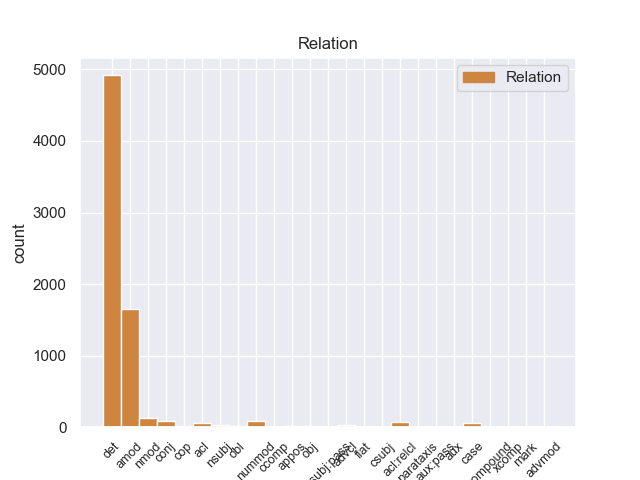
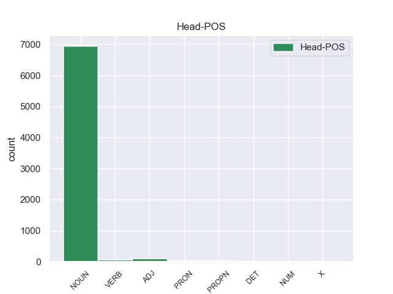
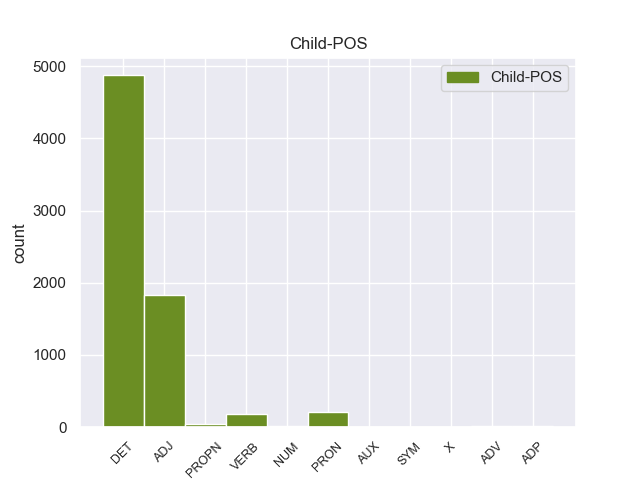

Distribution of features within this leaf



Agreement Rules sorted by frequency.
- When the dependent token is the determiner(det) of the head token, and the dependent token is DET.
1 Ευελπιστώ _ _ _ _ 0 _ _ _
2 ότι _ _ _ _ 0 _ _ _
3 η _ _ _ _ 0 _ _ _
4 απόφαση _ _ _ _ 0 _ _ _
5 αυτή _ _ _ _ 0 _ _ _
6 , _ _ _ _ 0 _ _ _
7 συμπεριλαμβανομένης _ _ _ _ 0 _ _ _
8 και _ _ _ _ 0 _ _ _
9 της _ _ _ _ 0 _ _ _
10 αιτιολογικής _ _ _ _ 0 _ _ _
11 έκθεσης _ _ _ _ 0 _ _ _
12 που _ _ _ _ 0 _ _ _
13 την _ _ _ _ 0 _ _ _
14 συνοδεύει _ _ _ _ 0 _ _ _
15 , _ _ _ _ 0 _ _ _
16 θα _ _ _ _ 0 _ _ _
17 διαβιβαστεί _ _ _ _ 0 _ _ _
18 σ _ _ _ _ 0 _ _ _
19 τις eτ DET _ Definite=Def|Gender=Masc|Number=Plur|PronType=Art 21 det _ _
20 γαλλικές _ _ _ _ 0 _ _ _
21 αρχές αρχέ NOUN _ Gender=Masc|Number=Plur 0 _ _ _
22 , _ _ _ _ 0 _ _ _
23 εφόσον _ _ _ _ 0 _ _ _
24 υπερψηφιστεί _ _ _ _ 0 _ _ _
25 από _ _ _ _ 0 _ _ _
26 το _ _ _ _ 0 _ _ _
27 Κοινοβούλιο _ _ _ _ 0 _ _ _
28 . _ _ _ _ 0 _ _ _
1 Ευελπιστώ _ _ _ _ 0 _ _ _
2 ότι _ _ _ _ 0 _ _ _
3 η _ _ _ _ 0 _ _ _
4 απόφαση _ _ _ _ 0 _ _ _
5 αυτή _ _ _ _ 0 _ _ _
6 , _ _ _ _ 0 _ _ _
7 συμπεριλαμβανομένης _ _ _ _ 0 _ _ _
8 και _ _ _ _ 0 _ _ _
9 της _ _ _ _ 0 _ _ _
10 αιτιολογικής _ _ _ _ 0 _ _ _
11 έκθεσης _ _ _ _ 0 _ _ _
12 που _ _ _ _ 0 _ _ _
13 την _ _ _ _ 0 _ _ _
14 συνοδεύει _ _ _ _ 0 _ _ _
15 , _ _ _ _ 0 _ _ _
16 θα _ _ _ _ 0 _ _ _
17 διαβιβαστεί _ _ _ _ 0 _ _ _
18 σ _ _ _ _ 0 _ _ _
19 τις _ _ _ _ 0 _ _ _
20 γαλλικές γαλλικέ ADJ _ Gender=Masc|Number=Plur 21 amod _ _
21 αρχές αρχέ NOUN _ Gender=Masc|Number=Plur 0 _ _ _
22 , _ _ _ _ 0 _ _ _
23 εφόσον _ _ _ _ 0 _ _ _
24 υπερψηφιστεί _ _ _ _ 0 _ _ _
25 από _ _ _ _ 0 _ _ _
26 το _ _ _ _ 0 _ _ _
27 Κοινοβούλιο _ _ _ _ 0 _ _ _
28 . _ _ _ _ 0 _ _ _
1 Κύριε _ _ _ _ 0 _ _ _
2 Πρόεδρε _ _ _ _ 0 _ _ _
3 , _ _ _ _ 0 _ _ _
4 οι _ _ _ _ 0 _ _ _
5 υπό _ _ _ _ 0 _ _ _
6 συζήτηση _ _ _ _ 0 _ _ _
7 υποθέσεις _ _ _ _ 0 _ _ _
8 αφορούν _ _ _ _ 0 _ _ _
9 πολύ _ _ _ _ 0 _ _ _
10 σοβαρές _ _ _ _ 0 _ _ _
11 κατηγορίες _ _ _ _ 0 _ _ _
12 , _ _ _ _ 0 _ _ _
13 οι _ _ _ _ 0 _ _ _
14 οποίες _ _ _ _ 0 _ _ _
15 βαρύνουν _ _ _ _ 0 _ _ _
16 δύο _ _ _ _ 0 _ _ _
17 βουλευτές _ _ _ _ 0 _ _ _
18 του _ _ _ _ 0 _ _ _
19 Σώματος _ _ _ _ 0 _ _ _
20 και _ _ _ _ 0 _ _ _
21 αναφέρονται _ _ _ _ 0 _ _ _
22 σ _ _ _ _ 0 _ _ _
23 την _ _ _ _ 0 _ _ _
24 πρώτη πρώτo ADJ _ Gender=Fem|Number=Sing|NumType=Ord 25 nummod _ _
25 σελίδα σελίδα NOUN _ Gender=Fem|Number=Sing 0 _ _ _
26 της _ _ _ _ 0 _ _ _
27 αιτιολογικής _ _ _ _ 0 _ _ _
28 έκθεσης _ _ _ _ 0 _ _ _
29 της _ _ _ _ 0 _ _ _
30 έκθεσής _ _ _ _ 0 _ _ _
31 μου _ _ _ _ 0 _ _ _
32 , _ _ _ _ 0 _ _ _
33 σ _ _ _ _ 0 _ _ _
34 την _ _ _ _ 0 _ _ _
35 οποία _ _ _ _ 0 _ _ _
36 συνιστώ _ _ _ _ 0 _ _ _
37 σ _ _ _ _ 0 _ _ _
38 τους _ _ _ _ 0 _ _ _
39 συναδέλφους _ _ _ _ 0 _ _ _
40 να _ _ _ _ 0 _ _ _
41 ρίξουν _ _ _ _ 0 _ _ _
42 μια _ _ _ _ 0 _ _ _
43 ματιά _ _ _ _ 0 _ _ _
44 . _ _ _ _ 0 _ _ _
1 Ιδιαίτερα _ _ _ _ 0 _ _ _
2 , _ _ _ _ 0 _ _ _
3 όσον _ _ _ _ 0 _ _ _
4 αφορά _ _ _ _ 0 _ _ _
5 μια _ _ _ _ 0 _ _ _
6 μελλοντική _ _ _ _ 0 _ _ _
7 συνεργασία συνεργασία NOUN _ Gender=Fem|Number=Sing 0 _ _ _
8 βασισμένη βασισμένo VERB _ Gender=Fem|Number=Sing|VerbForm=Part 7 acl _ _
9 σ _ _ _ _ 0 _ _ _
10 τις _ _ _ _ 0 _ _ _
11 δημοκρατικές _ _ _ _ 0 _ _ _
12 αρχές _ _ _ _ 0 _ _ _
13 των _ _ _ _ 0 _ _ _
14 ανθρωπίνων _ _ _ _ 0 _ _ _
15 δικαιωμάτων _ _ _ _ 0 _ _ _
16 , _ _ _ _ 0 _ _ _
17 των _ _ _ _ 0 _ _ _
18 θεμελιωδών _ _ _ _ 0 _ _ _
19 ελευθεριών _ _ _ _ 0 _ _ _
20 και _ _ _ _ 0 _ _ _
21 του _ _ _ _ 0 _ _ _
22 κράτους _ _ _ _ 0 _ _ _
23 δικαίου _ _ _ _ 0 _ _ _
24 . _ _ _ _ 0 _ _ _
1 Σ _ _ _ _ 0 _ _ _
2 την _ _ _ _ 0 _ _ _
3 παρούσα _ _ _ _ 0 _ _ _
4 μορφή μορφή NOUN _ Gender=Fem|Number=Sing 0 _ _ _
5 της τηo PRON _ Gender=Fem|Number=Sing|VerbForm=Part 4 amod _ _
6 , _ _ _ _ 0 _ _ _
7 η _ _ _ _ 0 _ _ _
8 αίτηση _ _ _ _ 0 _ _ _
9 άρσης _ _ _ _ 0 _ _ _
10 της _ _ _ _ 0 _ _ _
11 ασυλίας _ _ _ _ 0 _ _ _
12 παρουσιάζεται _ _ _ _ 0 _ _ _
13 απαράδεκτα _ _ _ _ 0 _ _ _
14 ασαφής _ _ _ _ 0 _ _ _
15 . _ _ _ _ 0 _ _ _
1 Με _ _ _ _ 0 _ _ _
2 αυτές _ _ _ _ 0 _ _ _
3 τις _ _ _ _ 0 _ _ _
4 κατηγορίες _ _ _ _ 0 _ _ _
5 , _ _ _ _ 0 _ _ _
6 από _ _ _ _ 0 _ _ _
7 τις _ _ _ _ 0 _ _ _
8 οποίες _ _ _ _ 0 _ _ _
9 η _ _ _ _ 0 _ _ _
10 πρώτη _ _ _ _ 0 _ _ _
11 αφορά _ _ _ _ 0 _ _ _
12 λαθρεμπόριο _ _ _ _ 0 _ _ _
13 όπλων _ _ _ _ 0 _ _ _
14 κλπ. _ _ _ _ 0 _ _ _
15 , _ _ _ _ 0 _ _ _
16 και _ _ _ _ 0 _ _ _
17 βαρύνει _ _ _ _ 0 _ _ _
18 τόσο _ _ _ _ 0 _ _ _
19 τον _ _ _ _ 0 _ _ _
20 κ. _ _ _ _ 0 _ _ _
21 Pasqua _ _ _ _ 0 _ _ _
22 όσο _ _ _ _ 0 _ _ _
23 και _ _ _ _ 0 _ _ _
24 τον _ _ _ _ 0 _ _ _
25 κ. _ _ _ _ 0 _ _ _
26 Marchiani _ _ _ _ 0 _ _ _
27 , _ _ _ _ 0 _ _ _
28 ενώ _ _ _ _ 0 _ _ _
29 η _ _ _ _ 0 _ _ _
30 δεύτερη _ _ _ _ 0 _ _ _
31 στρέφεται _ _ _ _ 0 _ _ _
32 μόνον _ _ _ _ 0 _ _ _
33 εναντίον _ _ _ _ 0 _ _ _
34 του _ _ _ _ 0 _ _ _
35 κ. _ _ _ _ 0 _ _ _
36 Pasqua _ _ _ _ 0 _ _ _
37 , _ _ _ _ 0 _ _ _
38 οι _ _ _ _ 0 _ _ _
39 ανακριτές _ _ _ _ 0 _ _ _
40 δικαστές _ _ _ _ 0 _ _ _
41 ζητούν _ _ _ _ 0 _ _ _
42 την _ _ _ _ 0 _ _ _
43 άρση _ _ _ _ 0 _ _ _
44 της _ _ _ _ 0 _ _ _
45 βουλευτικής _ _ _ _ 0 _ _ _
46 ασυλίας _ _ _ _ 0 _ _ _
47 των _ _ _ _ 0 _ _ _
48 εν _ _ _ _ 0 _ _ _
49 λόγω _ _ _ _ 0 _ _ _
50 δύο _ _ _ _ 0 _ _ _
51 κυρίων _ _ _ _ 0 _ _ _
52 , _ _ _ _ 0 _ _ _
53 προκειμένου _ _ _ _ 0 _ _ _
54 να _ _ _ _ 0 _ _ _
55 τους _ _ _ _ 0 _ _ _
56 επιβληθούν _ _ _ _ 0 _ _ _
57 ορισμένα _ _ _ _ 0 _ _ _
58 μέτρα _ _ _ _ 0 _ _ _
59 δικαστικής _ _ _ _ 0 _ _ _
60 επιτήρησης _ _ _ _ 0 _ _ _
61 : _ _ _ _ 0 _ _ _
62 να _ _ _ _ 0 _ _ _
63 τους _ _ _ _ 0 _ _ _
64 απαγορευθεί _ _ _ _ 0 _ _ _
65 η _ _ _ _ 0 _ _ _
66 επαφή _ _ _ _ 0 _ _ _
67 με _ _ _ _ 0 _ _ _
68 διάφορους _ _ _ _ 0 _ _ _
69 μάρτυρες μάρτυρε NOUN _ Gender=Masc|Number=Plur 0 _ _ _
70 ή _ _ _ _ 0 _ _ _
71 συγκατηγορουμένους συγκατηγορουμένου ADJ _ Gender=Masc|Number=Plur 69 conj _ _
72 σ _ _ _ _ 0 _ _ _
73 τις _ _ _ _ 0 _ _ _
74 υποθέσεις _ _ _ _ 0 _ _ _
75 αυτές _ _ _ _ 0 _ _ _
76 και _ _ _ _ 0 _ _ _
77 η _ _ _ _ 0 _ _ _
78 μετάβαση _ _ _ _ 0 _ _ _
79 σε _ _ _ _ 0 _ _ _
80 διάφορες _ _ _ _ 0 _ _ _
81 χώρες _ _ _ _ 0 _ _ _
82 , _ _ _ _ 0 _ _ _
83 καθώς _ _ _ _ 0 _ _ _
84 και _ _ _ _ 0 _ _ _
85 να _ _ _ _ 0 _ _ _
86 τους _ _ _ _ 0 _ _ _
87 επιβληθεί _ _ _ _ 0 _ _ _
88 ενδεχομένως _ _ _ _ 0 _ _ _
89 η _ _ _ _ 0 _ _ _
90 καταβολή _ _ _ _ 0 _ _ _
91 εγγύησης _ _ _ _ 0 _ _ _
92 . _ _ _ _ 0 _ _ _
1 Εδώ _ _ _ _ 0 _ _ _
2 και _ _ _ _ 0 _ _ _
3 ενάμισι _ _ _ _ 0 _ _ _
4 χρόνο _ _ _ _ 0 _ _ _
5 κοιτάζουμε _ _ _ _ 0 _ _ _
6 άπραγοι _ _ _ _ 0 _ _ _
7 τον _ _ _ _ 0 _ _ _
8 εντελώς _ _ _ _ 0 _ _ _
9 άνισο _ _ _ _ 0 _ _ _
10 πόλεμο _ _ _ _ 0 _ _ _
11 που _ _ _ _ 0 _ _ _
12 διεξάγουν _ _ _ _ 0 _ _ _
13 αυτοί _ _ _ _ 0 _ _ _
14 οι _ _ _ _ 0 _ _ _
15 δύο _ _ _ _ 0 _ _ _
16 αντίπαλοι αντίπαλο NOUN _ Gender=Masc|Number=Plur 0 _ _ _
17 μεταξύ _ _ _ _ 0 _ _ _
18 τους é PRON _ Case=Acc,Nom|Gender=Masc|Number=Plur|Person=3|PronType=Prs 16 nmod _ _
19 , _ _ _ _ 0 _ _ _
20 κοιτάζουμε _ _ _ _ 0 _ _ _
21 τα _ _ _ _ 0 _ _ _
22 τανκς _ _ _ _ 0 _ _ _
23 των _ _ _ _ 0 _ _ _
24 Ισραηλινών _ _ _ _ 0 _ _ _
25 να _ _ _ _ 0 _ _ _
26 καταστρέφουν _ _ _ _ 0 _ _ _
27 σπίτια _ _ _ _ 0 _ _ _
28 και _ _ _ _ 0 _ _ _
29 να _ _ _ _ 0 _ _ _
30 σκοτώνουν _ _ _ _ 0 _ _ _
31 παλαιστίνιους _ _ _ _ 0 _ _ _
32 πολίτες _ _ _ _ 0 _ _ _
33 . _ _ _ _ 0 _ _ _
1 Σύμφωνα _ _ _ _ 0 _ _ _
2 με _ _ _ _ 0 _ _ _
3 το _ _ _ _ 0 _ _ _
4 άρθρο _ _ _ _ 0 _ _ _
5 10 _ _ _ _ 0 _ _ _
6 του _ _ _ _ 0 _ _ _
7 Πρωτοκόλλου _ _ _ _ 0 _ _ _
8 του _ _ _ _ 0 _ _ _
9 1965 _ _ _ _ 0 _ _ _
10 , _ _ _ _ 0 _ _ _
11 δεν _ _ _ _ 0 _ _ _
12 υφίσταται _ _ _ _ 0 _ _ _
13 σχετική _ _ _ _ 0 _ _ _
14 ασυλία _ _ _ _ 0 _ _ _
15 για _ _ _ _ 0 _ _ _
16 βουλευτή _ _ _ _ 0 _ _ _
17 της _ _ _ _ 0 _ _ _
18 Γαλλικής _ _ _ _ 0 _ _ _
19 Εθνοσυνέλευσης _ _ _ _ 0 _ _ _
20 ή _ _ _ _ 0 _ _ _
21 , _ _ _ _ 0 _ _ _
22 κατά _ _ _ _ 0 _ _ _
23 συνέπεια _ _ _ _ 0 _ _ _
24 , _ _ _ _ 0 _ _ _
25 για _ _ _ _ 0 _ _ _
26 γάλλο _ _ _ _ 0 _ _ _
27 βουλευτή _ _ _ _ 0 _ _ _
28 του _ _ _ _ 0 _ _ _
29 Ευρωπαϊκού _ _ _ _ 0 _ _ _
30 Κοινοβουλίου _ _ _ _ 0 _ _ _
31 σε _ _ _ _ 0 _ _ _
32 περίπτωση _ _ _ _ 0 _ _ _
33 δίωξης _ _ _ _ 0 _ _ _
34 για _ _ _ _ 0 _ _ _
35 κατηγορίες _ _ _ _ 0 _ _ _
36 αυτού _ _ _ _ 0 _ _ _
37 του του ADJ _ Gender=Masc|Number=Sing|PronType=Dem 38 det _ _
38 είδους είδους NOUN _ Gender=Masc|Number=Sing 0 _ _ _
39 . _ _ _ _ 0 _ _ _
1 Πρέπει _ _ _ _ 0 _ _ _
2 να _ _ _ _ 0 _ _ _
3 επισημανθεί _ _ _ _ 0 _ _ _
4 ότι _ _ _ _ 0 _ _ _
5 ο _ _ _ _ 0 _ _ _
6 Εισαγγελέας _ _ _ _ 0 _ _ _
7 Πλημμελειοδικών _ _ _ _ 0 _ _ _
8 υποστήριξε _ _ _ _ 0 _ _ _
9 σθεναρά _ _ _ _ 0 _ _ _
10 την _ _ _ _ 0 _ _ _
11 αίτηση _ _ _ _ 0 _ _ _
12 επιβολής _ _ _ _ 0 _ _ _
13 μέτρων _ _ _ _ 0 _ _ _
14 δικαστικής _ _ _ _ 0 _ _ _
15 επιτήρησης _ _ _ _ 0 _ _ _
16 που _ _ _ _ 0 _ _ _
17 υπέβαλαν _ _ _ _ 0 _ _ _
18 οι _ _ _ _ 0 _ _ _
19 ανακριτές _ _ _ _ 0 _ _ _
20 , _ _ _ _ 0 _ _ _
21 υπογραμμίζοντας _ _ _ _ 0 _ _ _
22 τη _ _ _ _ 0 _ _ _
23 σοβαρότητα _ _ _ _ 0 _ _ _
24 και _ _ _ _ 0 _ _ _
25 τη _ _ _ _ 0 _ _ _
26 φύση _ _ _ _ 0 _ _ _
27 της _ _ _ _ 0 _ _ _
28 υπόθεσης _ _ _ _ 0 _ _ _
29 και _ _ _ _ 0 _ _ _
30 χαρακτηρίζοντας _ _ _ _ 0 _ _ _
31 μάλιστα _ _ _ _ 0 _ _ _
32 την _ _ _ _ 0 _ _ _
33 αίτηση αίτηση NOUN _ Gender=Fem|Number=Sing 0 _ _ _
34 αυτή αυτe PRON _ Case=Acc,Nom|Gender=Fem|Number=Sing|Person=3|PronType=Prs 33 det _ _
35 ως _ _ _ _ 0 _ _ _
36 απαραίτητη _ _ _ _ 0 _ _ _
37 επί _ _ _ _ 0 _ _ _
38 της _ _ _ _ 0 _ _ _
39 αρχής _ _ _ _ 0 _ _ _
40 . _ _ _ _ 0 _ _ _
1 Αφενός _ _ _ _ 0 _ _ _
2 , _ _ _ _ 0 _ _ _
3 σ _ _ _ _ 0 _ _ _
4 την _ _ _ _ 0 _ _ _
5 αίτηση _ _ _ _ 0 _ _ _
6 λήψης _ _ _ _ 0 _ _ _
7 μέτρων _ _ _ _ 0 _ _ _
8 δικαστικής _ _ _ _ 0 _ _ _
9 επιτήρησης _ _ _ _ 0 _ _ _
10 δεν _ _ _ _ 0 _ _ _
11 διευκρινίζονται _ _ _ _ 0 _ _ _
12 οι _ _ _ _ 0 _ _ _
13 χώρες χώρε NOUN _ Gender=Masc|Number=Plur 0 _ _ _
14 τις _ _ _ _ 0 _ _ _
15 οποίες _ _ _ _ 0 _ _ _
16 θα _ _ _ _ 0 _ _ _
17 απαγορευθεί απαγορευθr VERB _ Gender=Masc|Number=Sing|Tense=Past|VerbForm=Part 13 acl:relcl _ _
18 να _ _ _ _ 0 _ _ _
19 επισκεφθούν _ _ _ _ 0 _ _ _
20 οι _ _ _ _ 0 _ _ _
21 κατηγορούμενοι _ _ _ _ 0 _ _ _
22 και _ _ _ _ 0 _ _ _
23 αφετέρου _ _ _ _ 0 _ _ _
24 , _ _ _ _ 0 _ _ _
25 ύστερα _ _ _ _ 0 _ _ _
26 από _ _ _ _ 0 _ _ _
27 απόφαση _ _ _ _ 0 _ _ _
28 του _ _ _ _ 0 _ _ _
29 Ακυρωτικού _ _ _ _ 0 _ _ _
30 Δικαστηρίου _ _ _ _ 0 _ _ _
31 , _ _ _ _ 0 _ _ _
32 το _ _ _ _ 0 _ _ _
33 εύρος _ _ _ _ 0 _ _ _
34 της _ _ _ _ 0 _ _ _
35 διαδικασίας _ _ _ _ 0 _ _ _
36 μένει _ _ _ _ 0 _ _ _
37 να _ _ _ _ 0 _ _ _
38 προσδιοριστεί _ _ _ _ 0 _ _ _
39 με _ _ _ _ 0 _ _ _
40 απόφαση _ _ _ _ 0 _ _ _
41 του _ _ _ _ 0 _ _ _
42 Εφετείου _ _ _ _ 0 _ _ _
43 . _ _ _ _ 0 _ _ _
1 Οι _ _ _ _ 0 _ _ _
2 αρχές _ _ _ _ 0 _ _ _
3 των eτ DET _ Definite=Def|Gender=Masc|Number=Plur|PronType=Art 4 case _ _
4 πόλεων πόλεω NOUN _ Gender=Masc|Number=Plur 0 _ _ _
5 εξέφρασαν _ _ _ _ 0 _ _ _
6 αυτή _ _ _ _ 0 _ _ _
7 την _ _ _ _ 0 _ _ _
8 επιθυμία _ _ _ _ 0 _ _ _
9 σε _ _ _ _ 0 _ _ _
10 συνέδριο _ _ _ _ 0 _ _ _
11 που _ _ _ _ 0 _ _ _
12 διεξήχθη _ _ _ _ 0 _ _ _
13 σ _ _ _ _ 0 _ _ _
14 τη _ _ _ _ 0 _ _ _
15 Βεγγάζη _ _ _ _ 0 _ _ _
16 . _ _ _ _ 0 _ _ _
1 Σύμφωνα _ _ _ _ 0 _ _ _
2 με _ _ _ _ 0 _ _ _
3 το _ _ _ _ 0 _ _ _
4 άρθρο _ _ _ _ 0 _ _ _
5 10 _ _ _ _ 0 _ _ _
6 του _ _ _ _ 0 _ _ _
7 Πρωτοκόλλου _ _ _ _ 0 _ _ _
8 του _ _ _ _ 0 _ _ _
9 1965 _ _ _ _ 0 _ _ _
10 , _ _ _ _ 0 _ _ _
11 δεν _ _ _ _ 0 _ _ _
12 υφίσταται _ _ _ _ 0 _ _ _
13 σχετική _ _ _ _ 0 _ _ _
14 ασυλία _ _ _ _ 0 _ _ _
15 για _ _ _ _ 0 _ _ _
16 βουλευτή _ _ _ _ 0 _ _ _
17 της _ _ _ _ 0 _ _ _
18 Γαλλικής _ _ _ _ 0 _ _ _
19 Εθνοσυνέλευσης _ _ _ _ 0 _ _ _
20 ή _ _ _ _ 0 _ _ _
21 , _ _ _ _ 0 _ _ _
22 κατά _ _ _ _ 0 _ _ _
23 συνέπεια _ _ _ _ 0 _ _ _
24 , _ _ _ _ 0 _ _ _
25 για _ _ _ _ 0 _ _ _
26 γάλλο γάλλο ADJ _ Gender=Masc|Number=Sing 27 nmod _ _
27 βουλευτή βουλευτή NOUN _ Gender=Masc|Number=Sing 0 _ _ _
28 του _ _ _ _ 0 _ _ _
29 Ευρωπαϊκού _ _ _ _ 0 _ _ _
30 Κοινοβουλίου _ _ _ _ 0 _ _ _
31 σε _ _ _ _ 0 _ _ _
32 περίπτωση _ _ _ _ 0 _ _ _
33 δίωξης _ _ _ _ 0 _ _ _
34 για _ _ _ _ 0 _ _ _
35 κατηγορίες _ _ _ _ 0 _ _ _
36 αυτού _ _ _ _ 0 _ _ _
37 του _ _ _ _ 0 _ _ _
38 είδους _ _ _ _ 0 _ _ _
39 . _ _ _ _ 0 _ _ _
1 Όπως _ _ _ _ 0 _ _ _
2 είναι _ _ _ _ 0 _ _ _
3 γνωστό γνωστό VERB _ Gender=Masc|Number=Sing|VerbForm=Part 9 advcl _ _
4 , _ _ _ _ 0 _ _ _
5 σήμερα _ _ _ _ 0 _ _ _
6 το _ _ _ _ 0 _ _ _
7 απόγευμα _ _ _ _ 0 _ _ _
8 θα _ _ _ _ 0 _ _ _
9 έχουμε έχοer VERB _ Gender=Masc|Number=Sing|Tense=Past|VerbForm=Part 0 _ _ _
10 σχετικές _ _ _ _ 0 _ _ _
11 διαβουλεύσεις _ _ _ _ 0 _ _ _
12 με _ _ _ _ 0 _ _ _
13 τον _ _ _ _ 0 _ _ _
14 Πρόεδρο _ _ _ _ 0 _ _ _
15 . _ _ _ _ 0 _ _ _
1 Αυτή αυτe PRON _ Gender=Fem|Number=Sing|PronType=Dem 4 nsubj _ _
2 είναι _ _ _ _ 0 _ _ _
3 η _ _ _ _ 0 _ _ _
4 κατάσταση κατάσταση NOUN _ Gender=Fem|Number=Sing 0 _ _ _
5 επί _ _ _ _ 0 _ _ _
6 της _ _ _ _ 0 _ _ _
7 οποίας _ _ _ _ 0 _ _ _
8 πρέπει _ _ _ _ 0 _ _ _
9 να _ _ _ _ 0 _ _ _
10 αποφασίσουμε _ _ _ _ 0 _ _ _
11 . _ _ _ _ 0 _ _ _
1 Όσον _ _ _ _ 0 _ _ _
2 αφορά _ _ _ _ 0 _ _ _
3 τον _ _ _ _ 0 _ _ _
4 ανταγωνισμό _ _ _ _ 0 _ _ _
5 καθαυτόν _ _ _ _ 0 _ _ _
6 , _ _ _ _ 0 _ _ _
7 γιατί _ _ _ _ 0 _ _ _
8 να _ _ _ _ 0 _ _ _
9 μην _ _ _ _ 0 _ _ _
10 είμαστε _ _ _ _ 0 _ _ _
11 ακόμη _ _ _ _ 0 _ _ _
12 πιο _ _ _ _ 0 _ _ _
13 φιλελεύθεροι φιλελεύθερο ADJ _ Gender=Masc|Number=Plur 0 _ _ _
14 και _ _ _ _ 0 _ _ _
15 να _ _ _ _ 0 _ _ _
16 αποφύγουμε αποφύγουr VERB _ Gender=Masc|Number=Sing|Tense=Past|VerbForm=Part 13 conj _ _
17 την _ _ _ _ 0 _ _ _
18 εφαρμογή _ _ _ _ 0 _ _ _
19 ειδικών _ _ _ _ 0 _ _ _
20 τομεακών _ _ _ _ 0 _ _ _
21 κανόνων _ _ _ _ 0 _ _ _
22 ; _ _ _ _ 0 _ _ _
1 Ο _ _ _ _ 0 _ _ _
2 θάνατος _ _ _ _ 0 _ _ _
3 του του ADP _ Definite=Def|Gender=Masc|Number=Sing|PronType=Art 4 case _ _
4 βασιλιά βασιλιά NOUN _ Gender=Masc|Number=Sing 0 _ _ _
5 Αλέξανδρου _ _ _ _ 0 _ _ _
6 είχε _ _ _ _ 0 _ _ _
7 ως _ _ _ _ 0 _ _ _
8 συνέπεια _ _ _ _ 0 _ _ _
9 να _ _ _ _ 0 _ _ _
10 ανακηρύξει _ _ _ _ 0 _ _ _
11 αντιβασιλέα _ _ _ _ 0 _ _ _
12 η _ _ _ _ 0 _ _ _
13 Βουλή _ _ _ _ 0 _ _ _
14 τον _ _ _ _ 0 _ _ _
15 ναύαρχο _ _ _ _ 0 _ _ _
16 Παύλο _ _ _ _ 0 _ _ _
17 Κουντουριώτη _ _ _ _ 0 _ _ _
18 . _ _ _ _ 0 _ _ _
1 Μια _ _ _ _ 0 _ _ _
2 υπεραγορά _ _ _ _ 0 _ _ _
3 θα _ _ _ _ 0 _ _ _
4 μπορούσε _ _ _ _ 0 _ _ _
5 να _ _ _ _ 0 _ _ _
6 διαθέτει _ _ _ _ 0 _ _ _
7 προς _ _ _ _ 0 _ _ _
8 πώληση _ _ _ _ 0 _ _ _
9 μία μίo NUM _ Gender=Fem|Number=Sing|PronType=Ind 12 nummod _ _
10 ή _ _ _ _ 0 _ _ _
11 πολλές _ _ _ _ 0 _ _ _
12 μάρκες μάρκε NOUN _ Gender=Fem|Number=Plur 0 _ _ _
13 αν _ _ _ _ 0 _ _ _
14 πληροί _ _ _ _ 0 _ _ _
15 τα _ _ _ _ 0 _ _ _
16 κριτήρια _ _ _ _ 0 _ _ _
17 που _ _ _ _ 0 _ _ _
18 καθορίζει _ _ _ _ 0 _ _ _
19 ο _ _ _ _ 0 _ _ _
20 κατασκευαστής _ _ _ _ 0 _ _ _
21 . _ _ _ _ 0 _ _ _
1 Το _ _ _ _ 0 _ _ _
2 δάσος _ _ _ _ 0 _ _ _
3 με _ _ _ _ 0 _ _ _
4 τα _ _ _ _ 0 _ _ _
5 πεύκα _ _ _ _ 0 _ _ _
6 και _ _ _ _ 0 _ _ _
7 τις _ _ _ _ 0 _ _ _
8 κουκουναριές _ _ _ _ 0 _ _ _
9 ( _ _ _ _ 0 _ _ _
10 pinus pinus PROPN _ Gender=Fem|Number=Sing 0 _ _ _
11 pinea pineo PROPN _ Gender=Fem|Number=Sing 10 amod _ _
12 ) _ _ _ _ 0 _ _ _
13 σταματάει _ _ _ _ 0 _ _ _
14 μόλις _ _ _ _ 0 _ _ _
15 λίγα _ _ _ _ 0 _ _ _
16 μέτρα _ _ _ _ 0 _ _ _
17 πριν _ _ _ _ 0 _ _ _
18 τη _ _ _ _ 0 _ _ _
19 θάλασσα _ _ _ _ 0 _ _ _
20 . _ _ _ _ 0 _ _ _
1 Παρόμοιο _ _ _ _ 0 _ _ _
2 καθεστώς _ _ _ _ 0 _ _ _
3 επιδιώκουν _ _ _ _ 0 _ _ _
4 και _ _ _ _ 0 _ _ _
5 οι _ _ _ _ 0 _ _ _
6 πόλεις πόλει NOUN _ Gender=Masc|Number=Plur 0 _ _ _
7 σ _ _ _ _ 0 _ _ _
8 τα _ _ _ _ 0 _ _ _
9 ανατολικά _ _ _ _ 0 _ _ _
10 της _ _ _ _ 0 _ _ _
11 Λιβύης _ _ _ _ 0 _ _ _
12 , _ _ _ _ 0 _ _ _
13 οι _ _ _ _ 0 _ _ _
14 οποίες _ _ _ _ 0 _ _ _
15 είναι _ _ _ _ 0 _ _ _
16 πλούσιες πλούσιε ADJ _ Gender=Masc|Number=Plur|VerbForm=Part 6 acl:relcl _ _
17 σε _ _ _ _ 0 _ _ _
18 κοιτάσματα _ _ _ _ 0 _ _ _
19 πετρελαίου _ _ _ _ 0 _ _ _
20 . _ _ _ _ 0 _ _ _
1 Το _ _ _ _ 0 _ _ _
2 Θαλάσσιο θαλάσσιο PROPN _ Gender=Masc|Number=Sing 7 nsubj _ _
3 Πάρκο _ _ _ _ 0 _ _ _
4 Αλοννήσου _ _ _ _ 0 _ _ _
5 είναι _ _ _ _ 0 _ _ _
6 το _ _ _ _ 0 _ _ _
7 πρώτο πρώτοo ADJ _ Gender=Masc|Number=Sing|NumType=Ord 0 _ _ _
8 σ _ _ _ _ 0 _ _ _
9 την _ _ _ _ 0 _ _ _
10 Ελλάδα _ _ _ _ 0 _ _ _
11 και _ _ _ _ 0 _ _ _
12 το _ _ _ _ 0 _ _ _
13 μεγαλύτερο _ _ _ _ 0 _ _ _
14 σ _ _ _ _ 0 _ _ _
15 την _ _ _ _ 0 _ _ _
16 Ευρώπη _ _ _ _ 0 _ _ _
17 και _ _ _ _ 0 _ _ _
18 τη _ _ _ _ 0 _ _ _
19 Μεσόγειο _ _ _ _ 0 _ _ _
20 , _ _ _ _ 0 _ _ _
21 το _ _ _ _ 0 _ _ _
22 οποίο _ _ _ _ 0 _ _ _
23 φιλοξενεί _ _ _ _ 0 _ _ _
24 τη _ _ _ _ 0 _ _ _
25 μεσογειακή _ _ _ _ 0 _ _ _
26 φώκια _ _ _ _ 0 _ _ _
27 monachus _ _ _ _ 0 _ _ _
28 - _ _ _ _ 0 _ _ _
29 monachus _ _ _ _ 0 _ _ _
30 ένα _ _ _ _ 0 _ _ _
31 είδος _ _ _ _ 0 _ _ _
32 που _ _ _ _ 0 _ _ _
33 εκλείπει _ _ _ _ 0 _ _ _
34 από _ _ _ _ 0 _ _ _
35 τη _ _ _ _ 0 _ _ _
36 Δυτική _ _ _ _ 0 _ _ _
37 Μεσόγειο _ _ _ _ 0 _ _ _
38 ( _ _ _ _ 0 _ _ _
39 εδώ _ _ _ _ 0 _ _ _
40 ο _ _ _ _ 0 _ _ _
41 πληθυσμός _ _ _ _ 0 _ _ _
42 φτάνει _ _ _ _ 0 _ _ _
43 τις _ _ _ _ 0 _ _ _
44 250 _ _ _ _ 0 _ _ _
45 ) _ _ _ _ 0 _ _ _
46 και _ _ _ _ 0 _ _ _
47 άλλα _ _ _ _ 0 _ _ _
48 σπάνια _ _ _ _ 0 _ _ _
49 είδη _ _ _ _ 0 _ _ _
50 χλωρίδας _ _ _ _ 0 _ _ _
51 και _ _ _ _ 0 _ _ _
52 πανίδας _ _ _ _ 0 _ _ _
53 όπως _ _ _ _ 0 _ _ _
54 η _ _ _ _ 0 _ _ _
55 αγριελιά _ _ _ _ 0 _ _ _
56 , _ _ _ _ 0 _ _ _
57 το _ _ _ _ 0 _ _ _
58 θαμνοκυπάρισσο _ _ _ _ 0 _ _ _
59 , _ _ _ _ 0 _ _ _
60 τα _ _ _ _ 0 _ _ _
61 ποσειδώνια _ _ _ _ 0 _ _ _
62 φύκη _ _ _ _ 0 _ _ _
63 αλλά _ _ _ _ 0 _ _ _
64 και _ _ _ _ 0 _ _ _
65 το _ _ _ _ 0 _ _ _
66 αγριοκάτσικο _ _ _ _ 0 _ _ _
67 των _ _ _ _ 0 _ _ _
68 Γιούρων _ _ _ _ 0 _ _ _
69 , _ _ _ _ 0 _ _ _
70 το _ _ _ _ 0 _ _ _
71 γεράκι _ _ _ _ 0 _ _ _
72 μαυροπετρίτης _ _ _ _ 0 _ _ _
73 , _ _ _ _ 0 _ _ _
74 τον _ _ _ _ 0 _ _ _
75 αιγόγλαρο _ _ _ _ 0 _ _ _
76 . _ _ _ _ 0 _ _ _
1 Θα _ _ _ _ 0 _ _ _
2 σας _ _ _ _ 0 _ _ _
3 υποστηρίξουμε _ _ _ _ 0 _ _ _
4 απόλυτα _ _ _ _ 0 _ _ _
5 εάν _ _ _ _ 0 _ _ _
6 το το PRON _ Case=Acc|Gender=Masc|Number=Sing|Person=3|PrepCase=Npr|PronType=Prs 7 obj _ _
7 θεσμοθετήσετε θεσμοθετήσετε VERB _ Gender=Masc|Number=Sing|VerbForm=Fin 0 _ _ _
8 αυτό _ _ _ _ 0 _ _ _
9 σύντομα _ _ _ _ 0 _ _ _
10 με _ _ _ _ 0 _ _ _
11 αποφάσεις _ _ _ _ 0 _ _ _
12 . _ _ _ _ 0 _ _ _
1 Το _ _ _ _ 0 _ _ _
2 δάσος _ _ _ _ 0 _ _ _
3 με _ _ _ _ 0 _ _ _
4 τα _ _ _ _ 0 _ _ _
5 πεύκα πεύκ NOUN _ Gender=Fem|Number=Plur 0 _ _ _
6 και _ _ _ _ 0 _ _ _
7 τις _ _ _ _ 0 _ _ _
8 κουκουναριές _ _ _ _ 0 _ _ _
9 ( _ _ _ _ 0 _ _ _
10 pinus pinus PROPN _ Gender=Fem|Number=Sing 5 appos _ _
11 pinea _ _ _ _ 0 _ _ _
12 ) _ _ _ _ 0 _ _ _
13 σταματάει _ _ _ _ 0 _ _ _
14 μόλις _ _ _ _ 0 _ _ _
15 λίγα _ _ _ _ 0 _ _ _
16 μέτρα _ _ _ _ 0 _ _ _
17 πριν _ _ _ _ 0 _ _ _
18 τη _ _ _ _ 0 _ _ _
19 θάλασσα _ _ _ _ 0 _ _ _
20 . _ _ _ _ 0 _ _ _
1 Οι _ _ _ _ 0 _ _ _
2 Κουκουναριές _ _ _ _ 0 _ _ _
3 είναι _ _ _ _ 0 _ _ _
4 ένα _ _ _ _ 0 _ _ _
5 μέρος _ _ _ _ 0 _ _ _
6 σ _ _ _ _ 0 _ _ _
7 τη _ _ _ _ 0 _ _ _
8 Σκιάθο _ _ _ _ 0 _ _ _
9 πασίγνωστο _ _ _ _ 0 _ _ _
10 για _ _ _ _ 0 _ _ _
11 την _ _ _ _ 0 _ _ _
12 παραλία παραλία NOUN _ Gender=Fem|Number=Sing 0 _ _ _
13 του _ _ _ _ 0 _ _ _
14 , _ _ _ _ 0 _ _ _
15 η _ _ _ _ 0 _ _ _
16 οποία _ _ _ _ 0 _ _ _
17 θεωρείται _ _ _ _ 0 _ _ _
18 μία μίo PRON _ Gender=Fem|Number=Sing|PronType=Ind 12 appos _ _
19 από _ _ _ _ 0 _ _ _
20 τις _ _ _ _ 0 _ _ _
21 πιο _ _ _ _ 0 _ _ _
22 όμορφες _ _ _ _ 0 _ _ _
23 της _ _ _ _ 0 _ _ _
24 Ευρώπης _ _ _ _ 0 _ _ _
25 . _ _ _ _ 0 _ _ _
1 Πίστευε _ _ _ _ 0 _ _ _
2 ότι _ _ _ _ 0 _ _ _
3 το _ _ _ _ 0 _ _ _
4 κίνημα _ _ _ _ 0 _ _ _
5 τη _ _ _ _ 0 _ _ _
6 συγκεκριμένη _ _ _ _ 0 _ _ _
7 στιγμή _ _ _ _ 0 _ _ _
8 και _ _ _ _ 0 _ _ _
9 αποτέλεσμα _ _ _ _ 0 _ _ _
10 δεν _ _ _ _ 0 _ _ _
11 θα _ _ _ _ 0 _ _ _
12 είχε _ _ _ _ 0 _ _ _
13 και _ _ _ _ 0 _ _ _
14 την _ _ _ _ 0 _ _ _
15 νεοσχηματισθείσα _ _ _ _ 0 _ _ _
16 κυβέρνηση _ _ _ _ 0 _ _ _
17 της _ _ _ _ 0 _ _ _
18 Αθήνας _ _ _ _ 0 _ _ _
19 θα _ _ _ _ 0 _ _ _
20 έφερνε _ _ _ _ 0 _ _ _
21 σε _ _ _ _ 0 _ _ _
22 δύσκολη _ _ _ _ 0 _ _ _
23 θέση _ _ _ _ 0 _ _ _
24 καθώς _ _ _ _ 0 _ _ _
25 είχε _ _ _ _ 0 _ _ _
26 να _ _ _ _ 0 _ _ _
27 αντιμετωπίσει _ _ _ _ 0 _ _ _
28 και _ _ _ _ 0 _ _ _
29 το _ _ _ _ 0 _ _ _
30 οικονομικό _ _ _ _ 0 _ _ _
31 πρόβλημα _ _ _ _ 0 _ _ _
32 της _ _ _ _ 0 _ _ _
33 Ελλάδας _ _ _ _ 0 _ _ _
34 που _ _ _ _ 0 _ _ _
35 μόλις _ _ _ _ 0 _ _ _
36 πριν _ _ _ _ 0 _ _ _
37 από _ _ _ _ 0 _ _ _
38 λίγο λίγο PRON _ Gender=Masc|Number=Sing|NumType=Card|PronType=Ind 40 obl _ _
39 είχε _ _ _ _ 0 _ _ _
40 κηρύξει κηρύξr VERB _ Gender=Masc|Number=Sing|Tense=Past|VerbForm=Part 0 _ _ _
41 πτώχευση _ _ _ _ 0 _ _ _
42 . _ _ _ _ 0 _ _ _
1 Είχε _ _ _ _ 0 _ _ _
2 γίνει γίνει VERB _ Gender=Masc|Number=Sing|Tense=Past|VerbForm=Part 3 cop _ _
3 αντικείμενο αντικείμενο NOUN _ Gender=Masc|Number=Sing 0 _ _ _
4 δρυμείας _ _ _ _ 0 _ _ _
5 κριτικής _ _ _ _ 0 _ _ _
6 για _ _ _ _ 0 _ _ _
7 τις _ _ _ _ 0 _ _ _
8 δηλώσεις _ _ _ _ 0 _ _ _
9 του _ _ _ _ 0 _ _ _
10 τα _ _ _ _ 0 _ _ _
11 τελευταία _ _ _ _ 0 _ _ _
12 χρόνια _ _ _ _ 0 _ _ _
13 , _ _ _ _ 0 _ _ _
14 σ _ _ _ _ 0 _ _ _
15 τις _ _ _ _ 0 _ _ _
16 οποίες _ _ _ _ 0 _ _ _
17 κατέκρινε _ _ _ _ 0 _ _ _
18 τις _ _ _ _ 0 _ _ _
19 δημόσιες _ _ _ _ 0 _ _ _
20 διαδηλώσεις _ _ _ _ 0 _ _ _
21 εναντίον _ _ _ _ 0 _ _ _
22 του _ _ _ _ 0 _ _ _
23 Μουμπάρακ _ _ _ _ 0 _ _ _
24 . _ _ _ _ 0 _ _ _
1 Σε _ _ _ _ 0 _ _ _
2 μία _ _ _ _ 0 _ _ _
3 συλλογή _ _ _ _ 0 _ _ _
4 ομιλιών _ _ _ _ 0 _ _ _
5 του _ _ _ _ 0 _ _ _
6 , _ _ _ _ 0 _ _ _
7 που _ _ _ _ 0 _ _ _
8 εκδόθηκε _ _ _ _ 0 _ _ _
9 σ _ _ _ _ 0 _ _ _
10 την _ _ _ _ 0 _ _ _
11 Ινδία _ _ _ _ 0 _ _ _
12 το _ _ _ _ 0 _ _ _
13 1998 _ _ _ _ 0 _ _ _
14 , _ _ _ _ 0 _ _ _
15 ο _ _ _ _ 0 _ _ _
16 Δαλάι _ _ _ _ 0 _ _ _
17 Λάμα _ _ _ _ 0 _ _ _
18 έκανε _ _ _ _ 0 _ _ _
19 ξανά _ _ _ _ 0 _ _ _
20 λόγο _ _ _ _ 0 _ _ _
21 για _ _ _ _ 0 _ _ _
22 " _ _ _ _ 0 _ _ _
23 κινεζικό κινεζικό PROPN _ Gender=Masc|Number=Sing 24 nmod _ _
24 απαρτχάιντ απαρτχάιντ NOUN _ Gender=Masc|Number=Sing 0 _ _ _
25 " _ _ _ _ 0 _ _ _
26 , _ _ _ _ 0 _ _ _
27 μέσω _ _ _ _ 0 _ _ _
28 της _ _ _ _ 0 _ _ _
29 άρνησης _ _ _ _ 0 _ _ _
30 ίσων _ _ _ _ 0 _ _ _
31 κοινωνικών _ _ _ _ 0 _ _ _
32 και _ _ _ _ 0 _ _ _
33 οικονομικών _ _ _ _ 0 _ _ _
34 δικαιωμάτων _ _ _ _ 0 _ _ _
35 για _ _ _ _ 0 _ _ _
36 τους _ _ _ _ 0 _ _ _
37 Θιβετιανούς _ _ _ _ 0 _ _ _
38 . _ _ _ _ 0 _ _ _
1 Συνειδητοποιώ _ _ _ _ 0 _ _ _
2 με _ _ _ _ 0 _ _ _
3 ανακούφιση _ _ _ _ 0 _ _ _
4 ότι _ _ _ _ 0 _ _ _
5 δεν _ _ _ _ 0 _ _ _
6 είμαι _ _ _ _ 0 _ _ _
7 ο _ _ _ _ 0 _ _ _
8 αρμόδιος _ _ _ _ 0 _ _ _
9 Επίτροπος _ _ _ _ 0 _ _ _
10 ούτε _ _ _ _ 0 _ _ _
11 για _ _ _ _ 0 _ _ _
12 τη _ _ _ _ 0 _ _ _
13 φορολογία _ _ _ _ 0 _ _ _
14 ούτε _ _ _ _ 0 _ _ _
15 για _ _ _ _ 0 _ _ _
16 τη _ _ _ _ 0 _ _ _
17 νομισματική _ _ _ _ 0 _ _ _
18 ένωση _ _ _ _ 0 _ _ _
19 , _ _ _ _ 0 _ _ _
20 αλλά _ _ _ _ 0 _ _ _
21 απλά _ _ _ _ 0 _ _ _
22 ο _ _ _ _ 0 _ _ _
23 Επίτροπος _ _ _ _ 0 _ _ _
24 για _ _ _ _ 0 _ _ _
25 την _ _ _ _ 0 _ _ _
26 ταπεινή _ _ _ _ 0 _ _ _
27 πολιτική _ _ _ _ 0 _ _ _
28 ανταγωνισμού _ _ _ _ 0 _ _ _
29 η _ _ _ _ 0 _ _ _
30 οποία _ _ _ _ 0 _ _ _
31 , _ _ _ _ 0 _ _ _
32 παρόλα _ _ _ _ 0 _ _ _
33 ταύτα _ _ _ _ 0 _ _ _
34 , _ _ _ _ 0 _ _ _
35 έχει _ _ _ _ 0 _ _ _
36 να _ _ _ _ 0 _ _ _
37 διαδραματίσει _ _ _ _ 0 _ _ _
38 ένα _ _ _ _ 0 _ _ _
39 ρόλο _ _ _ _ 0 _ _ _
40 και _ _ _ _ 0 _ _ _
41 προσπαθεί _ _ _ _ 0 _ _ _
42 να _ _ _ _ 0 _ _ _
43 τον _ _ _ _ 0 _ _ _
44 διαδραματίσει _ _ _ _ 0 _ _ _
45 δραστήρια _ _ _ _ 0 _ _ _
46 - _ _ _ _ 0 _ _ _
47 με _ _ _ _ 0 _ _ _
48 την _ _ _ _ 0 _ _ _
49 υποστήριξη _ _ _ _ 0 _ _ _
50 του _ _ _ _ 0 _ _ _
51 Κοινοβουλίου _ _ _ _ 0 _ _ _
52 , _ _ _ _ 0 _ _ _
53 η _ _ _ _ 0 _ _ _
54 οποία _ _ _ _ 0 _ _ _
55 είναι _ _ _ _ 0 _ _ _
56 εμφανής _ _ _ _ 0 _ _ _
57 για _ _ _ _ 0 _ _ _
58 μία _ _ _ _ 0 _ _ _
59 ακόμη ακόμη ADV _ Gender=Fem|Number=Sing 60 amod _ _
60 φορά φορά NOUN _ Gender=Fem|Number=Sing 0 _ _ _
61 σήμερα _ _ _ _ 0 _ _ _
62 . _ _ _ _ 0 _ _ _
1 Θα _ _ _ _ 0 _ _ _
2 σας _ _ _ _ 0 _ _ _
3 υποστηρίξουμε υποστηρίξουr VERB _ Gender=Masc|Number=Sing|Tense=Past|VerbForm=Part 0 _ _ _
4 απόλυτα _ _ _ _ 0 _ _ _
5 εάν _ _ _ _ 0 _ _ _
6 το _ _ _ _ 0 _ _ _
7 θεσμοθετήσετε θεσμοθετήσετε VERB _ Gender=Masc|Number=Sing|VerbForm=Fin 3 ccomp _ _
8 αυτό _ _ _ _ 0 _ _ _
9 σύντομα _ _ _ _ 0 _ _ _
10 με _ _ _ _ 0 _ _ _
11 αποφάσεις _ _ _ _ 0 _ _ _
12 . _ _ _ _ 0 _ _ _
1 Έτσι _ _ _ _ 0 _ _ _
2 συγκροτήθηκε _ _ _ _ 0 _ _ _
3 ένα _ _ _ _ 0 _ _ _
4 αυτόνομο _ _ _ _ 0 _ _ _
5 κράτος _ _ _ _ 0 _ _ _
6 , _ _ _ _ 0 _ _ _
7 υποτελές _ _ _ _ 0 _ _ _
8 σ _ _ _ _ 0 _ _ _
9 το _ _ _ _ 0 _ _ _
10 Οθωμανικό _ _ _ _ 0 _ _ _
11 κράτος _ _ _ _ 0 _ _ _
12 , _ _ _ _ 0 _ _ _
13 σ _ _ _ _ 0 _ _ _
14 τη _ _ _ _ 0 _ _ _
15 διακυβέρνηση _ _ _ _ 0 _ _ _
16 του _ _ _ _ 0 _ _ _
17 οποίου _ _ _ _ 0 _ _ _
18 συμμετείχαν _ _ _ _ 0 _ _ _
19 Έλληνες _ _ _ _ 0 _ _ _
20 , _ _ _ _ 0 _ _ _
21 Βούλγαροι _ _ _ _ 0 _ _ _
22 , _ _ _ _ 0 _ _ _
23 Τούρκοι _ _ _ _ 0 _ _ _
24 , _ _ _ _ 0 _ _ _
25 καθώς _ _ _ _ 0 _ _ _
26 και _ _ _ _ 0 _ _ _
27 Εβραίοι _ _ _ _ 0 _ _ _
28 οι DET _ Definite=Def|Gender=Masc|Number=Plur|PronType=Art 31 nsubj _ _
29 οποίοι _ _ _ _ 0 _ _ _
30 είχαν _ _ _ _ 0 _ _ _
31 δημιουργήσει δημιουργήσr VERB _ Gender=Masc|Number=Sing|Tense=Past|VerbForm=Part 0 _ _ _
32 μια _ _ _ _ 0 _ _ _
33 σημαντική _ _ _ _ 0 _ _ _
34 παροικία _ _ _ _ 0 _ _ _
35 σ _ _ _ _ 0 _ _ _
36 τη _ _ _ _ 0 _ _ _
37 Θεσσαλονίκη _ _ _ _ 0 _ _ _
38 . _ _ _ _ 0 _ _ _
1 Πρέπει _ _ _ _ 0 _ _ _
2 να _ _ _ _ 0 _ _ _
3 χρησιμοποιούμε _ _ _ _ 0 _ _ _
4 σωστά _ _ _ _ 0 _ _ _
5 το _ _ _ _ 0 _ _ _
6 χρήμα _ _ _ _ 0 _ _ _
7 - _ _ _ _ 0 _ _ _
8 φυσικά _ _ _ _ 0 _ _ _
9 για _ _ _ _ 0 _ _ _
10 την _ _ _ _ 0 _ _ _
11 αύξηση _ _ _ _ 0 _ _ _
12 των _ _ _ _ 0 _ _ _
13 υποδομών _ _ _ _ 0 _ _ _
14 , _ _ _ _ 0 _ _ _
15 για _ _ _ _ 0 _ _ _
16 την _ _ _ _ 0 _ _ _
17 παροχή _ _ _ _ 0 _ _ _
18 καλύτερων _ _ _ _ 0 _ _ _
19 υπηρεσιών _ _ _ _ 0 _ _ _
20 και _ _ _ _ 0 _ _ _
21 για _ _ _ _ 0 _ _ _
22 τη _ _ _ _ 0 _ _ _
23 μεγαλύτερη _ _ _ _ 0 _ _ _
24 δυνατή _ _ _ _ 0 _ _ _
25 αύξηση _ _ _ _ 0 _ _ _
26 της _ _ _ _ 0 _ _ _
27 τοπικής _ _ _ _ 0 _ _ _
28 απασχόλησης _ _ _ _ 0 _ _ _
29 - _ _ _ _ 0 _ _ _
30 δεν _ _ _ _ 0 _ _ _
31 πρέπει _ _ _ _ 0 _ _ _
32 όμως _ _ _ _ 0 _ _ _
33 να _ _ _ _ 0 _ _ _
34 χρησιμοποιείται _ _ _ _ 0 _ _ _
35 απλώς _ _ _ _ 0 _ _ _
36 ως _ _ _ _ 0 _ _ _
37 υποκατάστατο _ _ _ _ 0 _ _ _
38 για _ _ _ _ 0 _ _ _
39 τις _ _ _ _ 0 _ _ _
40 ιδιωτικές _ _ _ _ 0 _ _ _
41 και _ _ _ _ 0 _ _ _
42 άλλες άλλε DET _ Gender=Masc|Number=Plur|PronType=Ind 43 conj _ _
43 επενδύσεις επενδύσει NOUN _ Gender=Masc|Number=Plur 0 _ _ _
44 ή _ _ _ _ 0 _ _ _
45 για _ _ _ _ 0 _ _ _
46 άλλες _ _ _ _ 0 _ _ _
47 πρωτοβουλίες _ _ _ _ 0 _ _ _
48 δημιουργίας _ _ _ _ 0 _ _ _
49 τοπικών _ _ _ _ 0 _ _ _
50 θέσεων _ _ _ _ 0 _ _ _
51 απασχόλησης _ _ _ _ 0 _ _ _
52 . _ _ _ _ 0 _ _ _
1 Οι _ _ _ _ 0 _ _ _
2 Κουκουναριές _ _ _ _ 0 _ _ _
3 είναι _ _ _ _ 0 _ _ _
4 ένα _ _ _ _ 0 _ _ _
5 μέρος μέρος NOUN _ Gender=Masc|Number=Sing 0 _ _ _
6 σ _ _ _ _ 0 _ _ _
7 τη _ _ _ _ 0 _ _ _
8 Σκιάθο _ _ _ _ 0 _ _ _
9 πασίγνωστο πασίγνωστο ADJ _ Gender=Masc|Number=Sing|VerbForm=Part 5 acl _ _
10 για _ _ _ _ 0 _ _ _
11 την _ _ _ _ 0 _ _ _
12 παραλία _ _ _ _ 0 _ _ _
13 του _ _ _ _ 0 _ _ _
14 , _ _ _ _ 0 _ _ _
15 η _ _ _ _ 0 _ _ _
16 οποία _ _ _ _ 0 _ _ _
17 θεωρείται _ _ _ _ 0 _ _ _
18 μία _ _ _ _ 0 _ _ _
19 από _ _ _ _ 0 _ _ _
20 τις _ _ _ _ 0 _ _ _
21 πιο _ _ _ _ 0 _ _ _
22 όμορφες _ _ _ _ 0 _ _ _
23 της _ _ _ _ 0 _ _ _
24 Ευρώπης _ _ _ _ 0 _ _ _
25 . _ _ _ _ 0 _ _ _
1 Αντιθέτως _ _ _ _ 0 _ _ _
2 , _ _ _ _ 0 _ _ _
3 μερικές _ _ _ _ 0 _ _ _
4 φορές _ _ _ _ 0 _ _ _
5 αισθανόμαστε αισθανόμαστεr VERB _ Gender=Masc|Number=Sing|VerbForm=Fin 0 _ _ _
6 ότι _ _ _ _ 0 _ _ _
7 όταν _ _ _ _ 0 _ _ _
8 παρευρισκόμαστε _ _ _ _ 0 _ _ _
9 σ _ _ _ _ 0 _ _ _
10 την _ _ _ _ 0 _ _ _
11 ολομέλεια _ _ _ _ 0 _ _ _
12 χάνουμε _ _ _ _ 0 _ _ _
13 κάτι _ _ _ _ 0 _ _ _
14 σημαντικό σημαντικό ADJ _ Gender=Masc|Number=Sing 5 ccomp _ _
15 που _ _ _ _ 0 _ _ _
16 διαδραματίζεται _ _ _ _ 0 _ _ _
17 κάπου _ _ _ _ 0 _ _ _
18 αλλού _ _ _ _ 0 _ _ _
19 . _ _ _ _ 0 _ _ _
1 El _ _ _ _ 0 _ _ _
2 doodle _ _ _ _ 0 _ _ _
3 de _ _ _ _ 0 _ _ _
4 Google _ _ _ _ 0 _ _ _
5 de _ _ _ _ 0 _ _ _
6 este _ _ _ _ 0 _ _ _
7 sábado _ _ _ _ 0 _ _ _
8 - _ _ _ _ 0 _ _ _
9 domingo _ _ _ _ 0 _ _ _
10 ha _ _ _ _ 0 _ _ _
11 sido ser AUX _ Gender=Masc|Number=Sing|Tense=Past|VerbForm=Part 13 cop _ _
12 un _ _ _ _ 0 _ _ _
13 helado helado NOUN _ Gender=Masc|Number=Sing 0 _ _ _
14 sundae _ _ _ _ 0 _ _ _
15 que _ _ _ _ 0 _ _ _
16 ha _ _ _ _ 0 _ _ _
17 podido _ _ _ _ 0 _ _ _
18 acaramelar _ _ _ _ 0 _ _ _
19 a _ _ _ _ 0 _ _ _
20 los _ _ _ _ 0 _ _ _
21 usuarios _ _ _ _ 0 _ _ _
22 que _ _ _ _ 0 _ _ _
23 lo _ _ _ _ 0 _ _ _
24 vieron _ _ _ _ 0 _ _ _
25 . _ _ _ _ 0 _ _ _
1 Για _ _ _ _ 0 _ _ _
2 τον _ _ _ _ 0 _ _ _
3 λόγο _ _ _ _ 0 _ _ _
4 αυτόν _ _ _ _ 0 _ _ _
5 θεωρούμε _ _ _ _ 0 _ _ _
6 σημαντικό _ _ _ _ 0 _ _ _
7 να _ _ _ _ 0 _ _ _
8 γίνεται _ _ _ _ 0 _ _ _
9 μεν _ _ _ _ 0 _ _ _
10 η _ _ _ _ 0 _ _ _
11 σχετική _ _ _ _ 0 _ _ _
12 εκπαίδευση _ _ _ _ 0 _ _ _
13 , _ _ _ _ 0 _ _ _
14 όχι _ _ _ _ 0 _ _ _
15 όμως _ _ _ _ 0 _ _ _
16 δύο _ _ _ _ 0 _ _ _
17 φορές _ _ _ _ 0 _ _ _
18 , _ _ _ _ 0 _ _ _
19 μία μίo PRON _ Gender=Fem|Number=Sing|PronType=Ind 0 _ _ _
20 για _ _ _ _ 0 _ _ _
21 την _ _ _ _ 0 _ _ _
22 απόκτηση _ _ _ _ 0 _ _ _
23 της _ _ _ _ 0 _ _ _
24 άδειας _ _ _ _ 0 _ _ _
25 οδήγησης _ _ _ _ 0 _ _ _
26 και _ _ _ _ 0 _ _ _
27 μία μίo PRON _ Gender=Fem|Number=Sing|PronType=Ind 19 conj _ _
28 σ _ _ _ _ 0 _ _ _
29 το _ _ _ _ 0 _ _ _
30 πλαίσιο _ _ _ _ 0 _ _ _
31 της _ _ _ _ 0 _ _ _
32 κατάρτισης _ _ _ _ 0 _ _ _
33 . _ _ _ _ 0 _ _ _
1 Εν _ _ _ _ 0 _ _ _
2 πάση _ _ _ _ 0 _ _ _
3 περιπτώσει _ _ _ _ 0 _ _ _
4 , _ _ _ _ 0 _ _ _
5 είναι _ _ _ _ 0 _ _ _
6 σαφές _ _ _ _ 0 _ _ _
7 ότι _ _ _ _ 0 _ _ _
8 αυτό _ _ _ _ 0 _ _ _
9 που _ _ _ _ 0 _ _ _
10 εγκρίναμε _ _ _ _ 0 _ _ _
11 σήμερα _ _ _ _ 0 _ _ _
12 είναι _ _ _ _ 0 _ _ _
13 προϊόν _ _ _ _ 0 _ _ _
14 πολύ _ _ _ _ 0 _ _ _
15 βαθιάς _ _ _ _ 0 _ _ _
16 σκέψης _ _ _ _ 0 _ _ _
17 και _ _ _ _ 0 _ _ _
18 αποτελεί _ _ _ _ 0 _ _ _
19 ένα _ _ _ _ 0 _ _ _
20 δομημένο _ _ _ _ 0 _ _ _
21 σχέδιο _ _ _ _ 0 _ _ _
22 κανονισμού _ _ _ _ 0 _ _ _
23 , _ _ _ _ 0 _ _ _
24 αλλά _ _ _ _ 0 _ _ _
25 χρειάζεται _ _ _ _ 0 _ _ _
26 να _ _ _ _ 0 _ _ _
27 διεξαχθούν _ _ _ _ 0 _ _ _
28 περαιτέρω περαιτέρ ADJ _ Gender=Masc|Number=Plur 29 advmod _ _
29 διαβουλεύσεις διαβουλεύσει NOUN _ Gender=Masc|Number=Plur 0 _ _ _
30 και _ _ _ _ 0 _ _ _
31 αν _ _ _ _ 0 _ _ _
32 από _ _ _ _ 0 _ _ _
33 αυτές _ _ _ _ 0 _ _ _
34 ανακύψουν _ _ _ _ 0 _ _ _
35 σημαντικά _ _ _ _ 0 _ _ _
36 και _ _ _ _ 0 _ _ _
37 πειστικά _ _ _ _ 0 _ _ _
38 επιχειρήματα _ _ _ _ 0 _ _ _
39 , _ _ _ _ 0 _ _ _
40 φυσικά _ _ _ _ 0 _ _ _
41 θα _ _ _ _ 0 _ _ _
42 τα _ _ _ _ 0 _ _ _
43 λάβουμε _ _ _ _ 0 _ _ _
44 πολύ _ _ _ _ 0 _ _ _
45 σοβαρά _ _ _ _ 0 _ _ _
46 υπόψη _ _ _ _ 0 _ _ _
47 . _ _ _ _ 0 _ _ _
1 Συνειδητοποιώ _ _ _ _ 0 _ _ _
2 με _ _ _ _ 0 _ _ _
3 ανακούφιση _ _ _ _ 0 _ _ _
4 ότι _ _ _ _ 0 _ _ _
5 δεν _ _ _ _ 0 _ _ _
6 είμαι _ _ _ _ 0 _ _ _
7 ο _ _ _ _ 0 _ _ _
8 αρμόδιος _ _ _ _ 0 _ _ _
9 Επίτροπος _ _ _ _ 0 _ _ _
10 ούτε _ _ _ _ 0 _ _ _
11 για _ _ _ _ 0 _ _ _
12 τη _ _ _ _ 0 _ _ _
13 φορολογία _ _ _ _ 0 _ _ _
14 ούτε _ _ _ _ 0 _ _ _
15 για _ _ _ _ 0 _ _ _
16 τη _ _ _ _ 0 _ _ _
17 νομισματική _ _ _ _ 0 _ _ _
18 ένωση _ _ _ _ 0 _ _ _
19 , _ _ _ _ 0 _ _ _
20 αλλά _ _ _ _ 0 _ _ _
21 απλά _ _ _ _ 0 _ _ _
22 ο _ _ _ _ 0 _ _ _
23 Επίτροπος _ _ _ _ 0 _ _ _
24 για _ _ _ _ 0 _ _ _
25 την _ _ _ _ 0 _ _ _
26 ταπεινή _ _ _ _ 0 _ _ _
27 πολιτική _ _ _ _ 0 _ _ _
28 ανταγωνισμού _ _ _ _ 0 _ _ _
29 η _ _ _ _ 0 _ _ _
30 οποία _ _ _ _ 0 _ _ _
31 , _ _ _ _ 0 _ _ _
32 παρόλα _ _ _ _ 0 _ _ _
33 ταύτα _ _ _ _ 0 _ _ _
34 , _ _ _ _ 0 _ _ _
35 έχει _ _ _ _ 0 _ _ _
36 να _ _ _ _ 0 _ _ _
37 διαδραματίσει _ _ _ _ 0 _ _ _
38 ένα _ _ _ _ 0 _ _ _
39 ρόλο _ _ _ _ 0 _ _ _
40 και _ _ _ _ 0 _ _ _
41 προσπαθεί _ _ _ _ 0 _ _ _
42 να _ _ _ _ 0 _ _ _
43 τον _ _ _ _ 0 _ _ _
44 διαδραματίσει _ _ _ _ 0 _ _ _
45 δραστήρια _ _ _ _ 0 _ _ _
46 - _ _ _ _ 0 _ _ _
47 με _ _ _ _ 0 _ _ _
48 την _ _ _ _ 0 _ _ _
49 υποστήριξη _ _ _ _ 0 _ _ _
50 του _ _ _ _ 0 _ _ _
51 Κοινοβουλίου _ _ _ _ 0 _ _ _
52 , _ _ _ _ 0 _ _ _
53 η _ _ _ _ 0 _ _ _
54 οποία _ _ _ _ 0 _ _ _
55 είναι _ _ _ _ 0 _ _ _
56 εμφανής _ _ _ _ 0 _ _ _
57 για _ _ _ _ 0 _ _ _
58 μία μίo DET _ Gender=Fem|Number=Sing|PronType=Ind 60 nummod _ _
59 ακόμη _ _ _ _ 0 _ _ _
60 φορά φορά NOUN _ Gender=Fem|Number=Sing 0 _ _ _
61 σήμερα _ _ _ _ 0 _ _ _
62 . _ _ _ _ 0 _ _ _
1 Ella él PRON _ Case=Acc,Nom|Gender=Fem|Number=Sing|Person=3|PronType=Prs 15 nsubj:pass _ SpaceAfter=No
2 , _ _ _ _ 0 _ _ _
3 a _ _ _ _ 0 _ _ _
4 el _ _ _ _ 0 _ _ _
5 igual _ _ _ _ 0 _ _ _
6 que _ _ _ _ 0 _ _ _
7 todos _ _ _ _ 0 _ _ _
8 los _ _ _ _ 0 _ _ _
9 demás _ _ _ _ 0 _ _ _
10 miembros _ _ _ _ 0 _ _ _
11 de _ _ _ _ 0 _ _ _
12 Gorillaz _ _ _ _ 0 _ _ _
13 , _ _ _ _ 0 _ _ _
14 fue _ _ _ _ 0 _ _ _
15 creada crear VERB _ Gender=Fem|Number=Sing|Tense=Past|VerbForm=Part 0 _ _ _
16 por _ _ _ _ 0 _ _ _
17 Damon _ _ _ _ 0 _ _ _
18 Albarn _ _ _ _ 0 _ _ _
19 y _ _ _ _ 0 _ _ _
20 Jamie _ _ _ _ 0 _ _ _
21 Hewlett _ _ _ _ 0 _ _ _
22 , _ _ _ _ 0 _ _ _
23 fundadores _ _ _ _ 0 _ _ _
24 de _ _ _ _ 0 _ _ _
25 el _ _ _ _ 0 _ _ _
26 grupo _ _ _ _ 0 _ _ _
27 . _ _ _ _ 0 _ _ _
1 Αλλες _ _ _ _ 0 _ _ _
2 τροπολογίες _ _ _ _ 0 _ _ _
3 , _ _ _ _ 0 _ _ _
4 που _ _ _ _ 0 _ _ _
5 παρουσίασαν _ _ _ _ 0 _ _ _
6 άλλοι _ _ _ _ 0 _ _ _
7 συνάδελφοι _ _ _ _ 0 _ _ _
8 , _ _ _ _ 0 _ _ _
9 επιδιώκουν _ _ _ _ 0 _ _ _
10 από _ _ _ _ 0 _ _ _
11 την _ _ _ _ 0 _ _ _
12 καθιέρωση _ _ _ _ 0 _ _ _
13 ενός _ _ _ _ 0 _ _ _
14 ευρωπαϊκού _ _ _ _ 0 _ _ _
15 habeas habeas NOUN _ Gender=Masc|Number=Sing 0 _ _ _
16 corpus corpus PROPN _ Gender=Masc|Number=Sing 15 flat _ _
17 μέχρι _ _ _ _ 0 _ _ _
18 άλλους _ _ _ _ 0 _ _ _
19 στόχους _ _ _ _ 0 _ _ _
20 με _ _ _ _ 0 _ _ _
21 τους _ _ _ _ 0 _ _ _
22 οποίους _ _ _ _ 0 _ _ _
23 επίσης _ _ _ _ 0 _ _ _
24 συμφωνούμε _ _ _ _ 0 _ _ _
25 , _ _ _ _ 0 _ _ _
26 αλλά _ _ _ _ 0 _ _ _
27 δεν _ _ _ _ 0 _ _ _
28 πιστεύουμε _ _ _ _ 0 _ _ _
29 ότι _ _ _ _ 0 _ _ _
30 αυτό _ _ _ _ 0 _ _ _
31 είναι _ _ _ _ 0 _ _ _
32 το _ _ _ _ 0 _ _ _
33 κατάλληλο _ _ _ _ 0 _ _ _
34 νομικό _ _ _ _ 0 _ _ _
35 μέσο _ _ _ _ 0 _ _ _
36 για _ _ _ _ 0 _ _ _
37 τη _ _ _ _ 0 _ _ _
38 δρομολόγησή _ _ _ _ 0 _ _ _
39 τους _ _ _ _ 0 _ _ _
40 . _ _ _ _ 0 _ _ _
1 Los _ _ _ _ 0 _ _ _
2 puestos _ _ _ _ 0 _ _ _
3 de _ _ _ _ 0 _ _ _
4 trabajo _ _ _ _ 0 _ _ _
5 fueron _ _ _ _ 0 _ _ _
6 destruidos destruir VERB _ Gender=Masc|Number=Plur|Tense=Past|VerbForm=Part 0 _ _ _
7 , _ _ _ _ 0 _ _ _
8 no _ _ _ _ 0 _ _ _
9 creados creado VERB _ Gender=Masc|Number=Plur|VerbForm=Part 6 parataxis _ SpaceAfter=No
10 , _ _ _ _ 0 _ _ _
11 mientras _ _ _ _ 0 _ _ _
12 que _ _ _ _ 0 _ _ _
13 miles _ _ _ _ 0 _ _ _
14 de _ _ _ _ 0 _ _ _
15 siervos _ _ _ _ 0 _ _ _
16 como _ _ _ _ 0 _ _ _
17 los _ _ _ _ 0 _ _ _
18 trabajadores _ _ _ _ 0 _ _ _
19 extranjeros _ _ _ _ 0 _ _ _
20 fueron _ _ _ _ 0 _ _ _
21 traídos _ _ _ _ 0 _ _ _
22 y _ _ _ _ 0 _ _ _
23 explotados _ _ _ _ 0 _ _ _
24 . _ _ _ _ 0 _ _ _
1 Τις _ _ _ _ 0 _ _ _
2 καταθέσεις _ _ _ _ 0 _ _ _
3 , _ _ _ _ 0 _ _ _
4 σ _ _ _ _ 0 _ _ _
5 τις _ _ _ _ 0 _ _ _
6 οποίες _ _ _ _ 0 _ _ _
7 δεν _ _ _ _ 0 _ _ _
8 έχει _ _ _ _ 0 _ _ _
9 γίνει _ _ _ _ 0 _ _ _
10 καμία _ _ _ _ 0 _ _ _
11 κίνηση _ _ _ _ 0 _ _ _
12 του _ _ _ _ 0 _ _ _
13 λογαριασμού _ _ _ _ 0 _ _ _
14 για _ _ _ _ 0 _ _ _
15 20 _ _ _ _ 0 _ _ _
16 χρόνια _ _ _ _ 0 _ _ _
17 έχει _ _ _ _ 0 _ _ _
18 βάλει _ _ _ _ 0 _ _ _
19 σ _ _ _ _ 0 _ _ _
20 το _ _ _ _ 0 _ _ _
21 στόχαστρο _ _ _ _ 0 _ _ _
22 το _ _ _ _ 0 _ _ _
23 Υπουργείο _ _ _ _ 0 _ _ _
24 Οικονομικών _ _ _ _ 0 _ _ _
25 , _ _ _ _ 0 _ _ _
26 καθώς _ _ _ _ 0 _ _ _
27 μάλιστα _ _ _ _ 0 _ _ _
28 σύμφωνα _ _ _ _ 0 _ _ _
29 με _ _ _ _ 0 _ _ _
30 εκτιμήσεις _ _ _ _ 0 _ _ _
31 τραπεζικών _ _ _ _ 0 _ _ _
32 στελεχών _ _ _ _ 0 _ _ _
33 φθάνουν _ _ _ _ 0 _ _ _
34 το _ _ _ _ 0 _ _ _
35 ποσό ποσό NOUN _ Gender=Masc|Number=Sing 0 _ _ _
36 των _ _ _ _ 0 _ _ _
37 3 _ _ _ _ 0 _ _ _
38 δισεκατομμυρίων δισεκατομμυρίων NUM _ Gender=Masc|Number=Plur 35 nmod _ _
39 ευρώ _ _ _ _ 0 _ _ _
40 . _ _ _ _ 0 _ _ _
1 Carnosauria _ _ _ _ 0 _ _ _
2 ha _ _ _ _ 0 _ _ _
3 sido ser AUX _ Gender=Masc|Number=Sing|Tense=Past|VerbForm=Part 4 aux:pass _ _
4 usado usar VERB _ Gender=Masc|Number=Sing|Tense=Past|VerbForm=Part 0 _ _ _
5 tradicionalmente _ _ _ _ 0 _ _ _
6 como _ _ _ _ 0 _ _ _
7 un _ _ _ _ 0 _ _ _
8 " _ _ _ _ 0 _ _ _
9 cajón _ _ _ _ 0 _ _ _
10 de _ _ _ _ 0 _ _ _
11 sastre _ _ _ _ 0 _ _ _
12 " _ _ _ _ 0 _ _ _
13 para _ _ _ _ 0 _ _ _
14 todos _ _ _ _ 0 _ _ _
15 los _ _ _ _ 0 _ _ _
16 grandes _ _ _ _ 0 _ _ _
17 terópodos _ _ _ _ 0 _ _ _
18 , _ _ _ _ 0 _ _ _
19 pero _ _ _ _ 0 _ _ _
20 los _ _ _ _ 0 _ _ _
21 análisis _ _ _ _ 0 _ _ _
22 en _ _ _ _ 0 _ _ _
23 los _ _ _ _ 0 _ _ _
24 años _ _ _ _ 0 _ _ _
25 1980s _ _ _ _ 0 _ _ _
26 y _ _ _ _ 0 _ _ _
27 1990s _ _ _ _ 0 _ _ _
28 revelaron _ _ _ _ 0 _ _ _
29 que _ _ _ _ 0 _ _ _
30 aparte _ _ _ _ 0 _ _ _
31 de _ _ _ _ 0 _ _ _
32 el _ _ _ _ 0 _ _ _
33 tamaño _ _ _ _ 0 _ _ _
34 , _ _ _ _ 0 _ _ _
35 el _ _ _ _ 0 _ _ _
36 grupo _ _ _ _ 0 _ _ _
37 compartía _ _ _ _ 0 _ _ _
38 muy _ _ _ _ 0 _ _ _
39 pocas _ _ _ _ 0 _ _ _
40 características _ _ _ _ 0 _ _ _
41 , _ _ _ _ 0 _ _ _
42 convirtiéndo _ _ _ _ 0 _ _ _
43 lo _ _ _ _ 0 _ _ _
44 en _ _ _ _ 0 _ _ _
45 polifilético _ _ _ _ 0 _ _ _
46 . _ _ _ _ 0 _ _ _
1 La _ _ _ _ 0 _ _ _
2 C c X _ Gender=Fem|Number=Sing 6 nsubj _ _
3 - _ _ _ _ 0 _ _ _
4 2 _ _ _ _ 0 _ _ _
5 la _ _ _ _ 0 _ _ _
6 une une VERB _ Gender=Fem|Number=Sing|VerbForm=Fin 0 _ _ _
7 con _ _ _ _ 0 _ _ _
8 Pulpí _ _ _ _ 0 _ _ _
9 , _ _ _ _ 0 _ _ _
10 Lorca _ _ _ _ 0 _ _ _
11 , _ _ _ _ 0 _ _ _
12 Murcia _ _ _ _ 0 _ _ _
13 y _ _ _ _ 0 _ _ _
14 con _ _ _ _ 0 _ _ _
15 Águilas _ _ _ _ 0 _ _ _
16 . _ _ _ _ 0 _ _ _
1 Μάλιστα _ _ _ _ 0 _ _ _
2 , _ _ _ _ 0 _ _ _
3 για _ _ _ _ 0 _ _ _
4 το _ _ _ _ 0 _ _ _
5 θάνατο _ _ _ _ 0 _ _ _
6 επιρρίπτει _ _ _ _ 0 _ _ _
7 την _ _ _ _ 0 _ _ _
8 ευθύνη _ _ _ _ 0 _ _ _
9 σ _ _ _ _ 0 _ _ _
10 την _ _ _ _ 0 _ _ _
11 ανεπαρκή _ _ _ _ 0 _ _ _
12 εθνική _ _ _ _ 0 _ _ _
13 πολιτική πολιτική NOUN _ Gender=Fem|Number=Sing 0 _ _ _
14 ευαισθητοποίησης ευαισθητοποίησης ADJ _ Gender=Fem|Number=Sing 13 appos _ _
15 του _ _ _ _ 0 _ _ _
16 λαού _ _ _ _ 0 _ _ _
17 . _ _ _ _ 0 _ _ _
1 Η _ _ _ _ 0 _ _ _
2 διαμάχη _ _ _ _ 0 _ _ _
3 μεταξύ _ _ _ _ 0 _ _ _
4 Ρωσίας _ _ _ _ 0 _ _ _
5 και _ _ _ _ 0 _ _ _
6 Ουκρανίας _ _ _ _ 0 _ _ _
7 για _ _ _ _ 0 _ _ _
8 το _ _ _ _ 0 _ _ _
9 μέλλον _ _ _ _ 0 _ _ _
10 της _ _ _ _ 0 _ _ _
11 Κριμαίας _ _ _ _ 0 _ _ _
12 κορυφώνεται _ _ _ _ 0 _ _ _
13 και _ _ _ _ 0 _ _ _
14 οι _ _ _ _ 0 _ _ _
15 Τάταροι _ _ _ _ 0 _ _ _
16 , _ _ _ _ 0 _ _ _
17 άλλη άλλo ADV _ Gender=Fem|Number=Plur|PronType=Ind 18 advmod _ _
18 μια μιo PRON _ Gender=Fem|Number=Sing|PronType=Ind 0 _ _ _
19 απ’ _ _ _ _ 0 _ _ _
20 τις _ _ _ _ 0 _ _ _
21 μειονότητες _ _ _ _ 0 _ _ _
22 που _ _ _ _ 0 _ _ _
23 ζουν _ _ _ _ 0 _ _ _
24 σ _ _ _ _ 0 _ _ _
25 την _ _ _ _ 0 _ _ _
26 επίμαχη _ _ _ _ 0 _ _ _
27 περιοχή _ _ _ _ 0 _ _ _
28 , _ _ _ _ 0 _ _ _
29 βρίσκονται _ _ _ _ 0 _ _ _
30 σε _ _ _ _ 0 _ _ _
31 μειονεκτική _ _ _ _ 0 _ _ _
32 θέση _ _ _ _ 0 _ _ _
33 . _ _ _ _ 0 _ _ _
1 Ωστόσο _ _ _ _ 0 _ _ _
2 , _ _ _ _ 0 _ _ _
3 η _ _ _ _ 0 _ _ _
4 Αντιπολίτευση _ _ _ _ 0 _ _ _
5 ( _ _ _ _ 0 _ _ _
6 κυρίως _ _ _ _ 0 _ _ _
7 οι _ _ _ _ 0 _ _ _
8 Κομμουνιστές _ _ _ _ 0 _ _ _
9 ) _ _ _ _ 0 _ _ _
10 απαιτούν _ _ _ _ 0 _ _ _
11 επανάληψη _ _ _ _ 0 _ _ _
12 των _ _ _ _ 0 _ _ _
13 προεδρικών _ _ _ _ 0 _ _ _
14 και _ _ _ _ 0 _ _ _
15 των _ _ _ _ 0 _ _ _
16 βουλευτικών _ _ _ _ 0 _ _ _
17 εκλογών _ _ _ _ 0 _ _ _
18 , _ _ _ _ 0 _ _ _
19 ενώ _ _ _ _ 0 _ _ _
20 ο _ _ _ _ 0 _ _ _
21 ΟΑΣΕ _ _ _ _ 0 _ _ _
22 κατήγγειλε _ _ _ _ 0 _ _ _
23 αρκετές αρκετέ ADV _ Gender=Masc|Number=Plur 24 det _ _
24 παρατυπίες παρατυπίε NOUN _ Gender=Masc|Number=Plur 0 _ _ _
25 . _ _ _ _ 0 _ _ _
1 Σκοπός _ _ _ _ 0 _ _ _
2 μας _ _ _ _ 0 _ _ _
3 είναι _ _ _ _ 0 _ _ _
4 η _ _ _ _ 0 _ _ _
5 κατάρτιση _ _ _ _ 0 _ _ _
6 να _ _ _ _ 0 _ _ _
7 είναι _ _ _ _ 0 _ _ _
8 παντού παντού ADJ _ Gender=Fem|Number=Sing 0 _ _ _
9 η _ _ _ _ 0 _ _ _
10 ίδια ίδιo ADJ _ Gender=Fem|Number=Sing 8 nsubj _ _
11 . _ _ _ _ 0 _ _ _
1 Σ _ _ _ _ 0 _ _ _
2 την _ _ _ _ 0 _ _ _
3 παραλία _ _ _ _ 0 _ _ _
4 , _ _ _ _ 0 _ _ _
5 οι _ _ _ _ 0 _ _ _
6 λάτρεις _ _ _ _ 0 _ _ _
7 των _ _ _ _ 0 _ _ _
8 θαλάσσιων _ _ _ _ 0 _ _ _
9 σπορ _ _ _ _ 0 _ _ _
10 μπορούν _ _ _ _ 0 _ _ _
11 να _ _ _ _ 0 _ _ _
12 κάνουν _ _ _ _ 0 _ _ _
13 θαλάσσιο _ _ _ _ 0 _ _ _
14 ski ski NOUN _ Gender=Masc|Number=Sing 0 _ _ _
15 , _ _ _ _ 0 _ _ _
16 jet _ _ _ _ 0 _ _ _
17 ski _ _ _ _ 0 _ _ _
18 , _ _ _ _ 0 _ _ _
19 wind _ _ _ _ 0 _ _ _
20 surfing surfing PROPN _ Gender=Masc|Number=Sing 14 conj _ _
21 , _ _ _ _ 0 _ _ _
22 αλεξίπτωτο _ _ _ _ 0 _ _ _
23 , _ _ _ _ 0 _ _ _
24 καταδύσεις _ _ _ _ 0 _ _ _
25 , _ _ _ _ 0 _ _ _
26 καθώς _ _ _ _ 0 _ _ _
27 και _ _ _ _ 0 _ _ _
28 να _ _ _ _ 0 _ _ _
29 ενοικιάσουν _ _ _ _ 0 _ _ _
30 σκάφη _ _ _ _ 0 _ _ _
31 αναψυχής _ _ _ _ 0 _ _ _
32 . _ _ _ _ 0 _ _ _
1 Después _ _ _ _ 0 _ _ _
2 de _ _ _ _ 0 _ _ _
3 pasar _ _ _ _ 0 _ _ _
4 un uno NUM _ Gender=Masc|Number=Sing|NumType=Card 5 obl _ _
5 año año NOUN _ Gender=Masc|Number=Sing 0 _ _ _
6 allí _ _ _ _ 0 _ _ _
7 , _ _ _ _ 0 _ _ _
8 hizo _ _ _ _ 0 _ _ _
9 lo _ _ _ _ 0 _ _ _
10 que _ _ _ _ 0 _ _ _
11 la _ _ _ _ 0 _ _ _
12 mayoría _ _ _ _ 0 _ _ _
13 de _ _ _ _ 0 _ _ _
14 los _ _ _ _ 0 _ _ _
15 jóvenes _ _ _ _ 0 _ _ _
16 de _ _ _ _ 0 _ _ _
17 el _ _ _ _ 0 _ _ _
18 Paris _ _ _ _ 0 _ _ _
19 FC _ _ _ _ 0 _ _ _
20 suelen _ _ _ _ 0 _ _ _
21 hacer _ _ _ _ 0 _ _ _
22 y _ _ _ _ 0 _ _ _
23 se _ _ _ _ 0 _ _ _
24 unió _ _ _ _ 0 _ _ _
25 a _ _ _ _ 0 _ _ _
26 el _ _ _ _ 0 _ _ _
27 París _ _ _ _ 0 _ _ _
28 - _ _ _ _ 0 _ _ _
29 Saint _ _ _ _ 0 _ _ _
30 Germain _ _ _ _ 0 _ _ _
31 . _ _ _ _ 0 _ _ _
1 El _ _ _ _ 0 _ _ _
2 gasoil _ _ _ _ 0 _ _ _
3 de _ _ _ _ 0 _ _ _
4 el _ _ _ _ 0 _ _ _
5 vehículo _ _ _ _ 0 _ _ _
6 se _ _ _ _ 0 _ _ _
7 había _ _ _ _ 0 _ _ _
8 extendido _ _ _ _ 0 _ _ _
9 por _ _ _ _ 0 _ _ _
10 dos _ _ _ _ 0 _ _ _
11 de _ _ _ _ 0 _ _ _
12 los _ _ _ _ 0 _ _ _
13 tres _ _ _ _ 0 _ _ _
14 carriles _ _ _ _ 0 _ _ _
15 de _ _ _ _ 0 _ _ _
16 la _ _ _ _ 0 _ _ _
17 calzada _ _ _ _ 0 _ _ _
18 , _ _ _ _ 0 _ _ _
19 que _ _ _ _ 0 _ _ _
20 han _ _ _ _ 0 _ _ _
21 debido deber AUX _ Gender=Masc|Number=Sing|Tense=Past|VerbForm=Part 23 aux _ _
22 ser _ _ _ _ 0 _ _ _
23 cortados cortado VERB _ Gender=Masc|Number=Plur|Tense=Past|VerbForm=Part 0 _ _ _
24 a _ _ _ _ 0 _ _ _
25 el _ _ _ _ 0 _ _ _
26 tráfico _ _ _ _ 0 _ _ _
27 . _ _ _ _ 0 _ _ _
1 La _ _ _ _ 0 _ _ _
2 chica _ _ _ _ 0 _ _ _
3 , _ _ _ _ 0 _ _ _
4 que _ _ _ _ 0 _ _ _
5 es _ _ _ _ 0 _ _ _
6 muy _ _ _ _ 0 _ _ _
7 mona _ _ _ _ 0 _ _ _
8 por _ _ _ _ 0 _ _ _
9 cierto _ _ _ _ 0 _ _ _
10 , _ _ _ _ 0 _ _ _
11 sabe _ _ _ _ 0 _ _ _
12 un _ _ _ _ 0 _ _ _
13 monton _ _ _ _ 0 _ _ _
14 y _ _ _ _ 0 _ _ _
15 te _ _ _ _ 0 _ _ _
16 dice _ _ _ _ 0 _ _ _
17 donde _ _ _ _ 0 _ _ _
18 queda _ _ _ _ 0 _ _ _
19 bien _ _ _ _ 0 _ _ _
20 lo _ _ _ _ 0 _ _ _
21 que _ _ _ _ 0 _ _ _
22 te _ _ _ _ 0 _ _ _
23 quieres _ _ _ _ 0 _ _ _
24 tatuar _ _ _ _ 0 _ _ _
25 , _ _ _ _ 0 _ _ _
26 el _ _ _ _ 0 _ _ _
27 tamaño tamaño NOUN _ Gender=Masc|Number=Sing 0 _ _ _
28 de _ _ _ _ 0 _ _ _
29 el _ _ _ _ 0 _ _ _
30 tattoo tattoo X _ Gender=Masc|Number=Sing 27 nmod _ SpaceAfter=No
31 , _ _ _ _ 0 _ _ _
32 la _ _ _ _ 0 _ _ _
33 gama _ _ _ _ 0 _ _ _
34 cromatica _ _ _ _ 0 _ _ _
35 que _ _ _ _ 0 _ _ _
36 deberias _ _ _ _ 0 _ _ _
37 utilizar _ _ _ _ 0 _ _ _
38 .... _ _ _ _ 0 _ _ _
39 Un _ _ _ _ 0 _ _ _
40 puntazo _ _ _ _ 0 _ _ _
41 ! _ _ _ _ 0 _ _ _
1 Dönitz _ _ _ _ 0 _ _ _
2 ordenó _ _ _ _ 0 _ _ _
3 que _ _ _ _ 0 _ _ _
4 el _ _ _ _ 0 _ _ _
5 barco _ _ _ _ 0 _ _ _
6 fuera _ _ _ _ 0 _ _ _
7 arreglado _ _ _ _ 0 _ _ _
8 sin _ _ _ _ 0 _ _ _
9 reparar _ _ _ _ 0 _ _ _
10 en _ _ _ _ 0 _ _ _
11 costes _ _ _ _ 0 _ _ _
12 a _ _ _ _ 0 _ _ _
13 pesar _ _ _ _ 0 _ _ _
14 de _ _ _ _ 0 _ _ _
15 que _ _ _ _ 0 _ _ _
16 sabía _ _ _ _ 0 _ _ _
17 que _ _ _ _ 0 _ _ _
18 el _ _ _ _ 0 _ _ _
19 acorazado _ _ _ _ 0 _ _ _
20 ya _ _ _ _ 0 _ _ _
21 no _ _ _ _ 0 _ _ _
22 podría _ _ _ _ 0 _ _ _
23 ser _ _ _ _ 0 _ _ _
24 usado _ _ _ _ 0 _ _ _
25 en _ _ _ _ 0 _ _ _
26 acciones _ _ _ _ 0 _ _ _
27 de _ _ _ _ 0 _ _ _
28 superficie _ _ _ _ 0 _ _ _
29 debido deber VERB _ Gender=Masc|Number=Sing|VerbForm=Part 33 case _ _
30 a _ _ _ _ 0 _ _ _
31 el _ _ _ _ 0 _ _ _
32 insuficiente _ _ _ _ 0 _ _ _
33 apoyo apoyo NOUN _ Gender=Masc|Number=Sing 0 _ _ _
34 de _ _ _ _ 0 _ _ _
35 combate _ _ _ _ 0 _ _ _
36 . _ _ _ _ 0 _ _ _
1 Desde _ _ _ _ 0 _ _ _
2 1965 _ _ _ _ 0 _ _ _
3 hasta _ _ _ _ 0 _ _ _
4 1986 _ _ _ _ 0 _ _ _
5 , _ _ _ _ 0 _ _ _
6 Griffin _ _ _ _ 0 _ _ _
7 presentó _ _ _ _ 0 _ _ _
8 su _ _ _ _ 0 _ _ _
9 propio _ _ _ _ 0 _ _ _
10 talk talk X _ Gender=Masc|Number=Sing 11 compound _ _
11 show show NOUN _ Gender=Masc|Number=Sing 0 _ _ _
12 , _ _ _ _ 0 _ _ _
13 The _ _ _ _ 0 _ _ _
14 Merv _ _ _ _ 0 _ _ _
15 Griffin _ _ _ _ 0 _ _ _
16 Show _ _ _ _ 0 _ _ _
17 , _ _ _ _ 0 _ _ _
18 producido _ _ _ _ 0 _ _ _
19 por _ _ _ _ 0 _ _ _
20 Group _ _ _ _ 0 _ _ _
21 W _ _ _ _ 0 _ _ _
22 ( _ _ _ _ 0 _ _ _
23 Westinghouse _ _ _ _ 0 _ _ _
24 Broadcasting _ _ _ _ 0 _ _ _
25 ) _ _ _ _ 0 _ _ _
26 . _ _ _ _ 0 _ _ _
1 Fueron _ _ _ _ 0 _ _ _
2 tan _ _ _ _ 0 _ _ _
3 crueles _ _ _ _ 0 _ _ _
4 los _ _ _ _ 0 _ _ _
5 ataques _ _ _ _ 0 _ _ _
6 que _ _ _ _ 0 _ _ _
7 en _ _ _ _ 0 _ _ _
8 primer _ _ _ _ 0 _ _ _
9 lugar _ _ _ _ 0 _ _ _
10 las _ _ _ _ 0 _ _ _
11 mujeres _ _ _ _ 0 _ _ _
12 y _ _ _ _ 0 _ _ _
13 niños _ _ _ _ 0 _ _ _
14 fueron _ _ _ _ 0 _ _ _
15 enviados _ _ _ _ 0 _ _ _
16 a _ _ _ _ 0 _ _ _
17 vivir _ _ _ _ 0 _ _ _
18 lejos _ _ _ _ 0 _ _ _
19 , _ _ _ _ 0 _ _ _
20 junto junto ADJ _ Gender=Masc|Number=Sing 23 case _ _
21 con _ _ _ _ 0 _ _ _
22 los _ _ _ _ 0 _ _ _
23 hombres hombre NOUN _ Gender=Masc|Number=Plur 0 _ _ _
24 de _ _ _ _ 0 _ _ _
25 la _ _ _ _ 0 _ _ _
26 Casa _ _ _ _ 0 _ _ _
27 de _ _ _ _ 0 _ _ _
28 Hador _ _ _ _ 0 _ _ _
29 . _ _ _ _ 0 _ _ _
1 Hasta _ _ _ _ 0 _ _ _
2 finales _ _ _ _ 0 _ _ _
3 de _ _ _ _ 0 _ _ _
4 el _ _ _ _ 0 _ _ _
5 siglo _ _ _ _ 0 _ _ _
6 XIX _ _ _ _ 0 _ _ _
7 el _ _ _ _ 0 _ _ _
8 Caballo caballo PROPN _ Gender=Masc|Number=Sing 11 nsubj:pass _ _
9 Blanco _ _ _ _ 0 _ _ _
10 era _ _ _ _ 0 _ _ _
11 renovado renovar VERB _ Gender=Masc|Number=Sing|VerbForm=Part 0 _ _ _
12 cada _ _ _ _ 0 _ _ _
13 siete _ _ _ _ 0 _ _ _
14 años _ _ _ _ 0 _ _ _
15 como _ _ _ _ 0 _ _ _
16 parte _ _ _ _ 0 _ _ _
17 de _ _ _ _ 0 _ _ _
18 un _ _ _ _ 0 _ _ _
19 festejo _ _ _ _ 0 _ _ _
20 local _ _ _ _ 0 _ _ _
21 que _ _ _ _ 0 _ _ _
22 se _ _ _ _ 0 _ _ _
23 celebraba _ _ _ _ 0 _ _ _
24 en _ _ _ _ 0 _ _ _
25 la _ _ _ _ 0 _ _ _
26 colina _ _ _ _ 0 _ _ _
27 . _ _ _ _ 0 _ _ _
1 Hemos _ _ _ _ 0 _ _ _
2 tenido _ _ _ _ 0 _ _ _
3 la _ _ _ _ 0 _ _ _
4 suerte _ _ _ _ 0 _ _ _
5 de _ _ _ _ 0 _ _ _
6 contratar _ _ _ _ 0 _ _ _
7 nuestra _ _ _ _ 0 _ _ _
8 boda _ _ _ _ 0 _ _ _
9 con _ _ _ _ 0 _ _ _
10 ellos _ _ _ _ 0 _ _ _
11 y _ _ _ _ 0 _ _ _
12 hemos _ _ _ _ 0 _ _ _
13 quedado quedar VERB _ Gender=Masc|Number=Sing|Tense=Past|VerbForm=Part 0 _ _ _
14 encantados encantado ADJ _ Gender=Masc|Number=Plur|VerbForm=Part 13 xcomp _ SpaceAfter=No
15 , _ _ _ _ 0 _ _ _
16 son _ _ _ _ 0 _ _ _
17 muy _ _ _ _ 0 _ _ _
18 profesionales _ _ _ _ 0 _ _ _
19 y _ _ _ _ 0 _ _ _
20 la _ _ _ _ 0 _ _ _
21 calidad _ _ _ _ 0 _ _ _
22 de _ _ _ _ 0 _ _ _
23 su _ _ _ _ 0 _ _ _
24 trabajo _ _ _ _ 0 _ _ _
25 está _ _ _ _ 0 _ _ _
26 muy _ _ _ _ 0 _ _ _
27 por _ _ _ _ 0 _ _ _
28 encima _ _ _ _ 0 _ _ _
29 de _ _ _ _ 0 _ _ _
30 el _ _ _ _ 0 _ _ _
31 resto _ _ _ _ 0 _ _ _
32 que _ _ _ _ 0 _ _ _
33 vimos _ _ _ _ 0 _ _ _
34 . _ _ _ _ 0 _ _ _
1 Los _ _ _ _ 0 _ _ _
2 trajes _ _ _ _ 0 _ _ _
3 de _ _ _ _ 0 _ _ _
4 Lucas _ _ _ _ 0 _ _ _
5 Gerardo _ _ _ _ 0 _ _ _
6 Dillon _ _ _ _ 0 _ _ _
7 , _ _ _ _ 0 _ _ _
8 4to _ _ _ _ 0 _ _ _
9 Barón _ _ _ _ 0 _ _ _
10 Clonbrock _ _ _ _ 0 _ _ _
11 , _ _ _ _ 0 _ _ _
12 el _ _ _ _ 0 _ _ _
13 122 _ _ _ _ 0 _ _ _
14 º _ _ _ _ 0 _ _ _
15 Caballero _ _ _ _ 0 _ _ _
16 de _ _ _ _ 0 _ _ _
17 la _ _ _ _ 0 _ _ _
18 Orden _ _ _ _ 0 _ _ _
19 , _ _ _ _ 0 _ _ _
20 están _ _ _ _ 0 _ _ _
21 expuestos expuesto VERB _ Gender=Masc|Number=Plur|VerbForm=Part 0 _ _ _
22 en _ _ _ _ 0 _ _ _
23 el _ _ _ _ 0 _ _ _
24 Museo museo PROPN _ Gender=Masc|Number=Sing 21 obl _ _
25 Nacional _ _ _ _ 0 _ _ _
26 de _ _ _ _ 0 _ _ _
27 Irlanda _ _ _ _ 0 _ _ _
28 , _ _ _ _ 0 _ _ _
29 en _ _ _ _ 0 _ _ _
30 Dublín _ _ _ _ 0 _ _ _
31 ; _ _ _ _ 0 _ _ _
1 Ως _ _ _ _ 0 _ _ _
2 εκ εκ ADV _ Gender=Masc|Number=Sing 3 case _ _
3 τούτου τούτου PRON _ Gender=Masc|Number=Sing 0 _ _ _
4 , _ _ _ _ 0 _ _ _
5 κατά _ _ _ _ 0 _ _ _
6 τη _ _ _ _ 0 _ _ _
7 διάρκεια _ _ _ _ 0 _ _ _
8 της _ _ _ _ 0 _ _ _
9 επίσκεψής _ _ _ _ 0 _ _ _
10 μου _ _ _ _ 0 _ _ _
11 πρότινος _ _ _ _ 0 _ _ _
12 σ _ _ _ _ 0 _ _ _
13 την _ _ _ _ 0 _ _ _
14 Τουρκία _ _ _ _ 0 _ _ _
15 υπογράμμισα _ _ _ _ 0 _ _ _
16 ότι _ _ _ _ 0 _ _ _
17 αναμένουμε _ _ _ _ 0 _ _ _
18 τη _ _ _ _ 0 _ _ _
19 λήψη _ _ _ _ 0 _ _ _
20 ευρύτερων _ _ _ _ 0 _ _ _
21 μέτρων _ _ _ _ 0 _ _ _
22 όσον _ _ _ _ 0 _ _ _
23 αφορά _ _ _ _ 0 _ _ _
24 την _ _ _ _ 0 _ _ _
25 ελευθερία _ _ _ _ 0 _ _ _
26 του _ _ _ _ 0 _ _ _
27 συνασπίζεσθαι _ _ _ _ 0 _ _ _
28 , _ _ _ _ 0 _ _ _
29 τη _ _ _ _ 0 _ _ _
30 χρήση _ _ _ _ 0 _ _ _
31 γλωσσών _ _ _ _ 0 _ _ _
32 σ _ _ _ _ 0 _ _ _
33 τη _ _ _ _ 0 _ _ _
34 ραδιοφωνία _ _ _ _ 0 _ _ _
35 , _ _ _ _ 0 _ _ _
36 την _ _ _ _ 0 _ _ _
37 τηλεόραση _ _ _ _ 0 _ _ _
38 και _ _ _ _ 0 _ _ _
39 την _ _ _ _ 0 _ _ _
40 εκπαίδευση _ _ _ _ 0 _ _ _
41 , _ _ _ _ 0 _ _ _
42 την _ _ _ _ 0 _ _ _
43 κατάργηση _ _ _ _ 0 _ _ _
44 της _ _ _ _ 0 _ _ _
45 θανατικής _ _ _ _ 0 _ _ _
46 ποινής _ _ _ _ 0 _ _ _
47 καθώς _ _ _ _ 0 _ _ _
48 και _ _ _ _ 0 _ _ _
49 την _ _ _ _ 0 _ _ _
50 υιοθέτηση _ _ _ _ 0 _ _ _
51 των _ _ _ _ 0 _ _ _
52 αρχών _ _ _ _ 0 _ _ _
53 της _ _ _ _ 0 _ _ _
54 νομικής _ _ _ _ 0 _ _ _
55 προστασίας _ _ _ _ 0 _ _ _
56 αντίστοιχα _ _ _ _ 0 _ _ _
57 με _ _ _ _ 0 _ _ _
58 τη _ _ _ _ 0 _ _ _
59 νομολογία _ _ _ _ 0 _ _ _
60 του _ _ _ _ 0 _ _ _
61 Ευρωπαϊκού _ _ _ _ 0 _ _ _
62 Δικαστηρίου _ _ _ _ 0 _ _ _
63 για _ _ _ _ 0 _ _ _
64 τα _ _ _ _ 0 _ _ _
65 Ανθρώπινα _ _ _ _ 0 _ _ _
66 Δικαιώματα _ _ _ _ 0 _ _ _
67 . _ _ _ _ 0 _ _ _
1 Ελπίζω _ _ _ _ 0 _ _ _
2 και _ _ _ _ 0 _ _ _
3 αναμένω _ _ _ _ 0 _ _ _
4 ότι _ _ _ _ 0 _ _ _
5 σ _ _ _ _ 0 _ _ _
6 τη _ _ _ _ 0 _ _ _
7 νέα _ _ _ _ 0 _ _ _
8 νομοθετική _ _ _ _ 0 _ _ _
9 πράξη _ _ _ _ 0 _ _ _
10 θα _ _ _ _ 0 _ _ _
11 είναι _ _ _ _ 0 _ _ _
12 σε _ _ _ _ 0 _ _ _
13 μεγάλο _ _ _ _ 0 _ _ _
14 βαθμό _ _ _ _ 0 _ _ _
15 και _ _ _ _ 0 _ _ _
16 με _ _ _ _ 0 _ _ _
17 απόλυτη _ _ _ _ 0 _ _ _
18 σαφήνεια σαφήνεια ADJ _ Gender=Fem|Number=Sing 19 obl _ _
19 ορατή ορατή ADJ _ Gender=Fem|Number=Sing 0 _ _ _
20 η _ _ _ _ 0 _ _ _
21 βούληση _ _ _ _ 0 _ _ _
22 για _ _ _ _ 0 _ _ _
23 μεταρρυθμίσεις _ _ _ _ 0 _ _ _
24 . _ _ _ _ 0 _ _ _
1 Δεν _ _ _ _ 0 _ _ _
2 πρόκειται _ _ _ _ 0 _ _ _
3 ίσως _ _ _ _ 0 _ _ _
4 για _ _ _ _ 0 _ _ _
5 την _ _ _ _ 0 _ _ _
6 κρίση _ _ _ _ 0 _ _ _
7 της _ _ _ _ 0 _ _ _
8 δεκαετίας _ _ _ _ 0 _ _ _
9 του _ _ _ _ 0 _ _ _
10 1920 _ _ _ _ 0 _ _ _
11 , _ _ _ _ 0 _ _ _
12 έχει _ _ _ _ 0 _ _ _
13 , _ _ _ _ 0 _ _ _
14 όμως _ _ _ _ 0 _ _ _
15 , _ _ _ _ 0 _ _ _
16 πολλές πολλέ DET _ Gender=Fem|Number=Plur|NumType=Card|PronType=Ind 17 amod _ _
17 ομοιότητες ομοιότητε NOUN _ Gender=Fem|Number=Plur 0 _ _ _
18 με _ _ _ _ 0 _ _ _
19 την _ _ _ _ 0 _ _ _
20 κατάσταση _ _ _ _ 0 _ _ _
21 της _ _ _ _ 0 _ _ _
22 δεκαετίας _ _ _ _ 0 _ _ _
23 του _ _ _ _ 0 _ _ _
24 1970 _ _ _ _ 0 _ _ _
25 . _ _ _ _ 0 _ _ _
1 Οι _ _ _ _ 0 _ _ _
2 συγκρούσεις _ _ _ _ 0 _ _ _
3 αυτές _ _ _ _ 0 _ _ _
4 , _ _ _ _ 0 _ _ _
5 που _ _ _ _ 0 _ _ _
6 σήμερα _ _ _ _ 0 _ _ _
7 έχουν _ _ _ _ 0 _ _ _
8 παγώσει _ _ _ _ 0 _ _ _
9 , _ _ _ _ 0 _ _ _
10 αύριο _ _ _ _ 0 _ _ _
11 ενδέχεται _ _ _ _ 0 _ _ _
12 να _ _ _ _ 0 _ _ _
13 μετατραπούν _ _ _ _ 0 _ _ _
14 σε _ _ _ _ 0 _ _ _
15 νέες _ _ _ _ 0 _ _ _
16 φλεγόμενες _ _ _ _ 0 _ _ _
17 ζώνες _ _ _ _ 0 _ _ _
18 και _ _ _ _ 0 _ _ _
19 , _ _ _ _ 0 _ _ _
20 από _ _ _ _ 0 _ _ _
21 αυτήν _ _ _ _ 0 _ _ _
22 την _ _ _ _ 0 _ _ _
23 άποψη _ _ _ _ 0 _ _ _
24 , _ _ _ _ 0 _ _ _
25 συμμερίζομαι _ _ _ _ 0 _ _ _
26 πλήρως _ _ _ _ 0 _ _ _
27 τη _ _ _ _ 0 _ _ _
28 γνώμη _ _ _ _ 0 _ _ _
29 του του ADP _ Definite=Def|Gender=Masc|Number=Sing|PronType=Art 30 det _ _
30 κ. κ. NOUN _ Gender=Masc|Number=Sing 0 _ _ _
31 Gahrton _ _ _ _ 0 _ _ _
32 , _ _ _ _ 0 _ _ _
33 ο _ _ _ _ 0 _ _ _
34 οποίος _ _ _ _ 0 _ _ _
35 δηλώνει _ _ _ _ 0 _ _ _
36 ότι _ _ _ _ 0 _ _ _
37 η _ _ _ _ 0 _ _ _
38 Ευρωπαϊκή _ _ _ _ 0 _ _ _
39 Ένωση _ _ _ _ 0 _ _ _
40 πρέπει _ _ _ _ 0 _ _ _
41 να _ _ _ _ 0 _ _ _
42 καταβάλει _ _ _ _ 0 _ _ _
43 μεγάλες _ _ _ _ 0 _ _ _
44 προσπάθειες _ _ _ _ 0 _ _ _
45 για _ _ _ _ 0 _ _ _
46 να _ _ _ _ 0 _ _ _
47 βοηθήσει _ _ _ _ 0 _ _ _
48 να _ _ _ _ 0 _ _ _
49 λυθούν _ _ _ _ 0 _ _ _
50 αυτά _ _ _ _ 0 _ _ _
51 τα _ _ _ _ 0 _ _ _
52 προβλήματα _ _ _ _ 0 _ _ _
53 , _ _ _ _ 0 _ _ _
54 προκειμένου _ _ _ _ 0 _ _ _
55 να _ _ _ _ 0 _ _ _
56 προαχθούν _ _ _ _ 0 _ _ _
57 οι _ _ _ _ 0 _ _ _
58 στόχοι _ _ _ _ 0 _ _ _
59 της _ _ _ _ 0 _ _ _
60 ειρήνης _ _ _ _ 0 _ _ _
61 και _ _ _ _ 0 _ _ _
62 της _ _ _ _ 0 _ _ _
63 ανάπτυξης _ _ _ _ 0 _ _ _
64 . _ _ _ _ 0 _ _ _
1 Σκοπός _ _ _ _ 0 _ _ _
2 μας _ _ _ _ 0 _ _ _
3 είναι _ _ _ _ 0 _ _ _
4 η _ _ _ _ 0 _ _ _
5 κατάρτιση κατάρτιση NOUN _ Gender=Fem|Number=Sing 0 _ _ _
6 να _ _ _ _ 0 _ _ _
7 είναι _ _ _ _ 0 _ _ _
8 παντού παντού ADJ _ Gender=Fem|Number=Sing 5 csubj _ _
9 η _ _ _ _ 0 _ _ _
10 ίδια _ _ _ _ 0 _ _ _
11 . _ _ _ _ 0 _ _ _
1 Είναι _ _ _ _ 0 _ _ _
2 γνωστό γνωστό ADJ _ Gender=Masc|Number=Sing|VerbForm=Part 0 _ _ _
3 ότι _ _ _ _ 0 _ _ _
4 έχει _ _ _ _ 0 _ _ _
5 σκοτώσει σκοτώσr VERB _ Gender=Masc|Number=Sing|Tense=Past|VerbForm=Part 2 csubj _ _
6 29.000 _ _ _ _ 0 _ _ _
7 Εβραίους _ _ _ _ 0 _ _ _
8 . _ _ _ _ 0 _ _ _
1 Σ _ _ _ _ 0 _ _ _
2 τη _ _ _ _ 0 _ _ _
3 Νέα _ _ _ _ 0 _ _ _
4 Υόρκη _ _ _ _ 0 _ _ _
5 συνήλθε _ _ _ _ 0 _ _ _
6 και _ _ _ _ 0 _ _ _
7 πάλι _ _ _ _ 0 _ _ _
8 το _ _ _ _ 0 _ _ _
9 Συμβούλιο _ _ _ _ 0 _ _ _
10 Ασφαλείας _ _ _ _ 0 _ _ _
11 του _ _ _ _ 0 _ _ _
12 ΟΗΕ _ _ _ _ 0 _ _ _
13 και _ _ _ _ 0 _ _ _
14 αποφάσισε _ _ _ _ 0 _ _ _
15 την _ _ _ _ 0 _ _ _
16 κατάπαυση _ _ _ _ 0 _ _ _
17 του _ _ _ _ 0 _ _ _
18 πυρός _ _ _ _ 0 _ _ _
19 από _ _ _ _ 0 _ _ _
20 τις _ _ _ _ 0 _ _ _
21 4 _ _ _ _ 0 _ _ _
22 το το SYM _ Definite=Def|Gender=Masc|Number=Sing|PronType=Art 23 det _ _
23 απόγευμα απόγευμα NOUN _ Gender=Masc|Number=Sing 0 _ _ _
24 της _ _ _ _ 0 _ _ _
25 22ης _ _ _ _ 0 _ _ _
26 Ιουλίου _ _ _ _ 0 _ _ _
27 . _ _ _ _ 0 _ _ _
1 Έτσι _ _ _ _ 0 _ _ _
2 , _ _ _ _ 0 _ _ _
3 αν _ _ _ _ 0 _ _ _
4 και _ _ _ _ 0 _ _ _
5 είμαστε _ _ _ _ 0 _ _ _
6 καταρχήν _ _ _ _ 0 _ _ _
7 κατά _ _ _ _ 0 _ _ _
8 των _ _ _ _ 0 _ _ _
9 ειδικών _ _ _ _ 0 _ _ _
10 τομεακών _ _ _ _ 0 _ _ _
11 κανόνων _ _ _ _ 0 _ _ _
12 , _ _ _ _ 0 _ _ _
13 όπως _ _ _ _ 0 _ _ _
14 είδατε _ _ _ _ 0 _ _ _
15 με _ _ _ _ 0 _ _ _
16 τη _ _ _ _ 0 _ _ _
17 δέσμη _ _ _ _ 0 _ _ _
18 μέτρων _ _ _ _ 0 _ _ _
19 για _ _ _ _ 0 _ _ _
20 τις _ _ _ _ 0 _ _ _
21 τηλεπικοινωνίες _ _ _ _ 0 _ _ _
22 που _ _ _ _ 0 _ _ _
23 κατέθεσε _ _ _ _ 0 _ _ _
24 ο _ _ _ _ 0 _ _ _
25 συνάδελφός συνάδελφός NOUN _ Gender=Masc|Number=Sing 0 _ _ _
26 μου _ _ _ _ 0 _ _ _
27 , _ _ _ _ 0 _ _ _
28 κ. κ. X _ Gender=Masc|Number=Sing 25 appos _ _
29 Liikanen _ _ _ _ 0 _ _ _
30 , _ _ _ _ 0 _ _ _
31 μετακινηθήκαμε _ _ _ _ 0 _ _ _
32 κάπως _ _ _ _ 0 _ _ _
33 προς _ _ _ _ 0 _ _ _
34 την _ _ _ _ 0 _ _ _
35 έγκριση _ _ _ _ 0 _ _ _
36 γενικών _ _ _ _ 0 _ _ _
37 κανόνων _ _ _ _ 0 _ _ _
38 ανταγωνισμού _ _ _ _ 0 _ _ _
39 . _ _ _ _ 0 _ _ _
1 Ο _ _ _ _ 0 _ _ _
2 δημοσιογράφος _ _ _ _ 0 _ _ _
3 , _ _ _ _ 0 _ _ _
4 ο _ _ _ _ 0 _ _ _
5 οποίος _ _ _ _ 0 _ _ _
6 έγραφε _ _ _ _ 0 _ _ _
7 τις _ _ _ _ 0 _ _ _
8 ομιλίες _ _ _ _ 0 _ _ _
9 του _ _ _ _ 0 _ _ _
10 Χάουμε _ _ _ _ 0 _ _ _
11 Μάτας _ _ _ _ 0 _ _ _
12 και _ _ _ _ 0 _ _ _
13 έπλεκε _ _ _ _ 0 _ _ _
14 το _ _ _ _ 0 _ _ _
15 εγκώμιο _ _ _ _ 0 _ _ _
16 του _ _ _ _ 0 _ _ _
17 τελευταίου _ _ _ _ 0 _ _ _
18 , _ _ _ _ 0 _ _ _
19 καταδικάστηκε _ _ _ _ 0 _ _ _
20 σε _ _ _ _ 0 _ _ _
21 κάθειρξη _ _ _ _ 0 _ _ _
22 τριών _ _ _ _ 0 _ _ _
23 ετών ετώ NOUN _ Gender=Masc|Number=Plur 0 _ _ _
24 και _ _ _ _ 0 _ _ _
25 εννέα εννέα NUM _ Gender=Masc|Number=Plur|NumType=Card 23 conj _ _
26 μηνών _ _ _ _ 0 _ _ _
27 . _ _ _ _ 0 _ _ _
1 Αφενός _ _ _ _ 0 _ _ _
2 , _ _ _ _ 0 _ _ _
3 σ _ _ _ _ 0 _ _ _
4 την _ _ _ _ 0 _ _ _
5 αίτηση αίτηση NOUN _ Gender=Fem|Number=Sing 0 _ _ _
6 λήψης λήψης VERB _ Gender=Fem|Number=Sing 5 nmod _ _
7 μέτρων _ _ _ _ 0 _ _ _
8 δικαστικής _ _ _ _ 0 _ _ _
9 επιτήρησης _ _ _ _ 0 _ _ _
10 δεν _ _ _ _ 0 _ _ _
11 διευκρινίζονται _ _ _ _ 0 _ _ _
12 οι _ _ _ _ 0 _ _ _
13 χώρες _ _ _ _ 0 _ _ _
14 τις _ _ _ _ 0 _ _ _
15 οποίες _ _ _ _ 0 _ _ _
16 θα _ _ _ _ 0 _ _ _
17 απαγορευθεί _ _ _ _ 0 _ _ _
18 να _ _ _ _ 0 _ _ _
19 επισκεφθούν _ _ _ _ 0 _ _ _
20 οι _ _ _ _ 0 _ _ _
21 κατηγορούμενοι _ _ _ _ 0 _ _ _
22 και _ _ _ _ 0 _ _ _
23 αφετέρου _ _ _ _ 0 _ _ _
24 , _ _ _ _ 0 _ _ _
25 ύστερα _ _ _ _ 0 _ _ _
26 από _ _ _ _ 0 _ _ _
27 απόφαση _ _ _ _ 0 _ _ _
28 του _ _ _ _ 0 _ _ _
29 Ακυρωτικού _ _ _ _ 0 _ _ _
30 Δικαστηρίου _ _ _ _ 0 _ _ _
31 , _ _ _ _ 0 _ _ _
32 το _ _ _ _ 0 _ _ _
33 εύρος _ _ _ _ 0 _ _ _
34 της _ _ _ _ 0 _ _ _
35 διαδικασίας _ _ _ _ 0 _ _ _
36 μένει _ _ _ _ 0 _ _ _
37 να _ _ _ _ 0 _ _ _
38 προσδιοριστεί _ _ _ _ 0 _ _ _
39 με _ _ _ _ 0 _ _ _
40 απόφαση _ _ _ _ 0 _ _ _
41 του _ _ _ _ 0 _ _ _
42 Εφετείου _ _ _ _ 0 _ _ _
43 . _ _ _ _ 0 _ _ _
Disagree Examples:
1 Usaba _ _ _ _ 0 _ _ _
2 un _ _ _ _ 0 _ _ _
3 raticida _ _ _ _ 0 _ _ _
4 llamado llamado VERB _ Gender=Masc|Number=Sing|VerbForm=Part 6 cop _ _
5 « _ _ _ _ 0 _ _ _
6 grasa grasa NOUN _ Gender=Fem|Number=Sing 0 _ _ _
7 de _ _ _ _ 0 _ _ _
8 ratas _ _ _ _ 0 _ _ _
9 » _ _ _ _ 0 _ _ _
10 - _ _ _ _ 0 _ _ _
11 en _ _ _ _ 0 _ _ _
12 alemán _ _ _ _ 0 _ _ _
13 , _ _ _ _ 0 _ _ _
14 « _ _ _ _ 0 _ _ _
15 Mäusebutter _ _ _ _ 0 _ _ _
16 » _ _ _ _ 0 _ _ _
17 , _ _ _ _ 0 _ _ _
18 muy _ _ _ _ 0 _ _ _
19 común _ _ _ _ 0 _ _ _
20 en _ _ _ _ 0 _ _ _
21 la _ _ _ _ 0 _ _ _
22 época _ _ _ _ 0 _ _ _
23 - _ _ _ _ 0 _ _ _
24 , _ _ _ _ 0 _ _ _
25 que _ _ _ _ 0 _ _ _
26 consistía _ _ _ _ 0 _ _ _
27 en _ _ _ _ 0 _ _ _
28 pequeñas _ _ _ _ 0 _ _ _
29 hojuelas _ _ _ _ 0 _ _ _
30 de _ _ _ _ 0 _ _ _
31 arsénico _ _ _ _ 0 _ _ _
32 mezcladas _ _ _ _ 0 _ _ _
33 en _ _ _ _ 0 _ _ _
34 grasa _ _ _ _ 0 _ _ _
35 animal _ _ _ _ 0 _ _ _
36 . _ _ _ _ 0 _ _ _
1 Durante _ _ _ _ 0 _ _ _
2 su _ _ _ _ 0 _ _ _
3 niñez _ _ _ _ 0 _ _ _
4 tuvo _ _ _ _ 0 _ _ _
5 estadías _ _ _ _ 0 _ _ _
6 en _ _ _ _ 0 _ _ _
7 el el DET _ Definite=Def|Gender=Masc|Number=Sing|PronType=Art 8 det _ _
8 área área NOUN _ Gender=Fem|Number=Sing 0 _ _ _
9 de _ _ _ _ 0 _ _ _
10 el _ _ _ _ 0 _ _ _
11 Rin _ _ _ _ 0 _ _ _
12 , _ _ _ _ 0 _ _ _
13 Estrasburgo _ _ _ _ 0 _ _ _
14 , _ _ _ _ 0 _ _ _
15 Bruselas _ _ _ _ 0 _ _ _
16 y _ _ _ _ 0 _ _ _
17 Hamburgo _ _ _ _ 0 _ _ _
18 donde _ _ _ _ 0 _ _ _
19 el _ _ _ _ 0 _ _ _
20 interés _ _ _ _ 0 _ _ _
21 por _ _ _ _ 0 _ _ _
22 la _ _ _ _ 0 _ _ _
23 política _ _ _ _ 0 _ _ _
24 de _ _ _ _ 0 _ _ _
25 su _ _ _ _ 0 _ _ _
26 padre _ _ _ _ 0 _ _ _
27 lo _ _ _ _ 0 _ _ _
28 puso _ _ _ _ 0 _ _ _
29 en _ _ _ _ 0 _ _ _
30 contacto _ _ _ _ 0 _ _ _
31 con _ _ _ _ 0 _ _ _
32 las _ _ _ _ 0 _ _ _
33 ideas _ _ _ _ 0 _ _ _
34 de _ _ _ _ 0 _ _ _
35 la _ _ _ _ 0 _ _ _
36 revolución _ _ _ _ 0 _ _ _
37 francesa _ _ _ _ 0 _ _ _
38 . _ _ _ _ 0 _ _ _
1 También _ _ _ _ 0 _ _ _
2 es _ _ _ _ 0 _ _ _
3 corredor corredor NOUN _ Gender=Masc|Number=Sing 0 _ _ _
4 de _ _ _ _ 0 _ _ _
5 muchas mucho PRON _ Gender=Fem|Number=Plur|NumType=Card|PronType=Ind 3 nmod _ _
6 de _ _ _ _ 0 _ _ _
7 ellas _ _ _ _ 0 _ _ _
8 , _ _ _ _ 0 _ _ _
9 desde _ _ _ _ 0 _ _ _
10 hace _ _ _ _ 0 _ _ _
11 algo _ _ _ _ 0 _ _ _
12 más _ _ _ _ 0 _ _ _
13 de _ _ _ _ 0 _ _ _
14 20 _ _ _ _ 0 _ _ _
15 años _ _ _ _ 0 _ _ _
16 . _ _ _ _ 0 _ _ _
1 El _ _ _ _ 0 _ _ _
2 agutí agutí NOUN _ Gender=Masc|Number=Sing 0 _ _ _
3 de _ _ _ _ 0 _ _ _
4 Roatán _ _ _ _ 0 _ _ _
5 o _ _ _ _ 0 _ _ _
6 guatuza guatuza PROPN _ Gender=Fem|Number=Sing 2 conj _ _
7 ( _ _ _ _ 0 _ _ _
8 Dasyprocta _ _ _ _ 0 _ _ _
9 ruatanica _ _ _ _ 0 _ _ _
10 ) _ _ _ _ 0 _ _ _
11 es _ _ _ _ 0 _ _ _
12 una _ _ _ _ 0 _ _ _
13 especie _ _ _ _ 0 _ _ _
14 de _ _ _ _ 0 _ _ _
15 roedor _ _ _ _ 0 _ _ _
16 histricomorfo _ _ _ _ 0 _ _ _
17 de _ _ _ _ 0 _ _ _
18 la _ _ _ _ 0 _ _ _
19 familia _ _ _ _ 0 _ _ _
20 Dasyproctidae _ _ _ _ 0 _ _ _
21 ; _ _ _ _ 0 _ _ _
1 El _ _ _ _ 0 _ _ _
2 agutí agutí NOUN _ Gender=Masc|Number=Sing 0 _ _ _
3 de _ _ _ _ 0 _ _ _
4 Roatán _ _ _ _ 0 _ _ _
5 o _ _ _ _ 0 _ _ _
6 guatuza _ _ _ _ 0 _ _ _
7 ( _ _ _ _ 0 _ _ _
8 Dasyprocta dasyprocta PROPN _ Gender=Fem|Number=Sing 2 appos _ _
9 ruatanica _ _ _ _ 0 _ _ _
10 ) _ _ _ _ 0 _ _ _
11 es _ _ _ _ 0 _ _ _
12 una _ _ _ _ 0 _ _ _
13 especie _ _ _ _ 0 _ _ _
14 de _ _ _ _ 0 _ _ _
15 roedor _ _ _ _ 0 _ _ _
16 histricomorfo _ _ _ _ 0 _ _ _
17 de _ _ _ _ 0 _ _ _
18 la _ _ _ _ 0 _ _ _
19 familia _ _ _ _ 0 _ _ _
20 Dasyproctidae _ _ _ _ 0 _ _ _
21 ; _ _ _ _ 0 _ _ _